This first page will get updated on every release with details.
- See this page also for general discussions around v8.6 - 9.0 development.
- v9 Virtual Feeds explanation.
- See Creating Widgets Module SDK
Very last version may not be on main repo, get it here:
(zip name is the same but contents changes to latest)
https://github.com/chaveiro/emoncms/archive/master.zip

Limitations
- Low-write mode not available for PHPFIWA. Disable the engine in the config if using this mode.
TODO (later)
- Review or implement bulk writes for PHPFIWA
- Update all other graphs (Already on Multigraph, Realtime, Smoothie, Zoom) to use async calls.
Change log
9.4 | 2016.03.15
- MYSQL port number user configurable to make possible for custom setups e.g. Docker
- Add support for generation of kWh/d from accumulating kWh for all daily kwh type visualisations
- Daily data editor fixes: now works with phptimeseries data & ability to edit historical days without affecting current days
- Add 'smoothing' option to data viewer
- Increase accuracy of power > kWh process by using double instead of float data type
- Improved terminal style auto updating logfile viewer and responsive emonpi updater
9.31 | 2016.02.13
- Multigraph hidden series toggle refactoring
- New MQTT input (beta)
- Fix PHPTimeSeries
- Fix remember me
9.3
- Added:
- Flot toggle module added to multigraph and timecompare visualizations.
- Input and Feed list grouped details
- Export grouped by tag
- Export excel timestamp format
- Event process module
- Merge of :
- Multigraph series toggle.
- Multigraph hide tag.
- Documentation updates
- Bugfixing: export and password length
- Removed: optional modules from core: dashboard, device
9.2
- Bugfixing on export virtual feeds data.
- Add min value and UI improvements on jgauge.
- Fix device module while using redis.
- Allow export in excel d/m/Y h:i:s format in user timezone.
- Added new Windrose and jgauge2 widgets.
- Added min value support to jgauge and jgauge2 widgets.
- Bugfixing process and device module.
- Preparation for eventProcess module.
- Hide/alert processes that require redis when redis is not installed.
- Bug fix on virtual feeds last time update
- Added device module
- Merge docs
- Merged contibuted fixes: tooltip and input.js
9.1
- Fix KW/h decrease on emoncms update.
- Fix DST change duplicating days in daily bar graph.
- Changed validation logic for $max_node_id_limit config setting, from node id numeric to maximal number of different nodeids. A node id can be a string now.
- Added Lib swiftmailer and a generic email helper class to core for sending emails.
- Added 5 new processors for virtual source feed : + - * / and 1/ 'source feed'
- Added support for devicekey instead of apikey, if using device module. A device key only allows posting to the device configured node.
- DST change fix for KWh processors.
9.0 RC2
- Add new widget : dewpoint.
- Clean now unsupported functions feed->get by name.
- Added support for Process List Modules.
9.0 RC
- Fix feeds and inputs not showing, due to UTF8 regex omitting user data after save.
- Merge of:
- UTF8 support
- Browser asks for remember user and password
- Spanish translation
- Removed dependency on dashboard widgets (3rd button on editor) of feed names, use feed id instead. Will break existing user dashboards. Need to edit dashboard and choose feeds again.
- Validate node id on input.
- Fix api documentation
- Fix mysql csv export
- Fix new instalation allow user to register
- Fix remember me.
- Asks for login when needed.
- Add support for apikey in "Authorization: Bearer " http header per rfc6750.
- Added support for redis port and auth.
- Fix mqtt_input.php script.
9.0 preview
- Show login button on small screens
- Added PHPTIMESERIES buffer writing.
- Show published dashboards as menu items (star icon).
- Hides published dashboards on <480px and menu-extra, menu-right on < 320px.
- Highlight current page on menu.
- Added dashboard description to menu collapsed and mouse over icon.
- New setting $menucollapses.
- Double click collapses all grouped table elements.
8.6.0 beta | for testers only
- Refactoring menu icons code.
- JS cleans on vis modules.
- Update Zoom vis to use async calls.
- HTTP 406 error returned if no controller found.
- Fix dashboard edit issue
- Spelling fixes
- Added buffer status in admin server info.
- Minor speed improvements on REDISBUFFER.
- Updated delete input now if has no values and updated +15m.
- Menu iconify
- Dashboard clone fix
- Fix user profile page ui
- Fullscreen Ui fix.
- Dashboard save status messages.
- Updated REDISBUFFER to read feed buffer and merge that data with saved feeds data so latest data is always displayed independent of buffer length.
8.6.0 Alpha | for testers only
- Virtual feed engine now passes value to next processlist slot.
- Improved looks on all pages in full width and process list editor is now modal
- Better update time calculation on feeds and input list.
- Fix bugs reported on this thread to date.
- Added low-write mode for PHPFINA.
- Updated REDISBUFFER engine with buffer read/write locks so updates dont get erased.
- Updated script/feedwriter.php to stable version for low-write daemon
- Modularized input processlist code to a new module in Module/process.
- Added a new engine type 'VIRTUAL' that calculates values on demand evaluated from a processlist for existing data feeds. Available from Feeds menu.
- Added a new engine type 'MEMORY', mysql with MEMORY tables. Data is held in RAM and lost on shutdown. Usefull for realtime data and benchmarking tests.
- Added a new engine type 'REDISBUFFER', this is an internal engine used from feed_model.php to deal will all redis low-write buffer logic.
- Added auto-load instances of engine classes only when needed in feed_model.php. Fast execution and less memory used.
- Updated MYSQL engine to support efficient bulk writes if low-write mode is active (post_bulk_prepare and post_bulk_save).
- Updated feed list to support virtual feeds with process list.
- Updated process module code to work in feed context for virtual feeds.
- Updated folder structure of vis module to use the standard folders names ./Views and ./visualization/[vis_folder_js_files].
- Updated vis widgets Multigraph, Realtime and Smoothie to use async calls with gpu adaptive refresh rate, more responsive.
- Updated all simple widgets (from dashboard module) to use gpu adaptive refresh rate, more responsive.
- Changed dashboards iframes urls to be relative. Will allow accessing local server behind a NAT from the internet without broken dashboards. Changes are applied on next dashboard save.
- Cleaned superfluous non text comments on some js files to lower download size.
- Updated log engine, removed dependency of log4php, use php native file writer.
- New config vars: redis_server, mqtt_server, allow_emonpi_update, log_enabled, log_filename, data_sampling (experimental, see settings.php), redisbuffer['enabled'] (for low-write mode)
- Added Admin menu Server Information, Logs viewer and redis flush.
Re: EmonCMS 9.31 | 2016.02.13 released
(reserved for future posts)
Re: EmonCMS 9.31 | 2016.02.13 released
Did some performance tests from my virtual machine for the new buffered writing mechanism :
-> Writing 500.000 time/values to local redis takes about 9s every time.
Cpu load is 50% redis 50% php.
-> Writing the same 500.000 from redis with buffered MySql engine to a Memory table takes 16s.
About 31250 timevalue/second.
(mysql server is a continent away! i have 20mbps upload)
-> Writing the same 500.000 from redis with buffered PHPFIFA engine to local file takes 21s.
About 23809 timevalue/second.
Dat file size is 391 Kbytes. about 18 KB/s... not so good.
CPU with mysql about 10% with phpfina 100% all used by php process.
I'm using the low-write code of php-fina engine for this, will try to improve.
But that proves PHP + disk writes are not so good.
Read is another test to be done that phpfina must win.
Will do reading benchmarks later.
Test code:
$starttime = microtime(true); // TEST DATA FILL $feedid = 127; // mysql memory feed //$feedid = 145; // phpfina local feed $start = 1437433200; //2015 07 20 00:00 for ($i=1;$i<=500000;$i++){ $date = $start + $i; $redis->zAdd("feed:$feedid:buffer",$date,$date."|".$i); } $midtime = microtime(true); $timediff = ($midtime - $starttime); echo "\nRedis writing took $timediff s\n"; // Execute buffered writing $feed->EngineClass(Engine::REDISBUFFER)->process_buffers(); $endtime = microtime(true); $timediff = ($endtime - $starttime); echo "\nAll writings took $timediff s\n";Re: EmonCMS 9.31 | 2016.02.13 released
Hello Chaveiro, this looks great! and its great to see that your keen to tackle the integration of buffering and combining read data from the buffer with stored data. Im struggling a bit to follow the development though. I've downloaded the above, ran some quick tests and scanned through the code. There are lots of interesting looking things but would take me quite a bit of time to really understand, perhaps the best thing is for me to wait until your further down the line with implementing the buffering for the other engines and then once your happy your at a more stable version then try and really understand what you have working.
There are a few minor theming issues such as the full width on the input api page, the login form and column widths on inputs page which I think dont look as good, maybe its to do with the screen sizes we are using?
I really like the process list "not modified", "changed press to save" feature.
I created a phpfwa feed and check the disk use and it states 1mb with only 1 datapoint, must be something wrong there.
Am I right that you've just separated out the process_model into its own module rather than actually modularising the processes?.. yet? Interested to hear what your thinking is there going further.
Re: EmonCMS 9.31 | 2016.02.13 released
"Changed dashboards iframes urls to be relative. Will allow accessing local server behind a NAT from the internet without broken dashboards. Changes are applied on next dashboard save." -brilliant!
Re: EmonCMS 9.31 | 2016.02.13 released
I added whenever i can responsive support for all screen sizes using bootstrap components, not fixed size values so it can get a little different depending of screen size, but should fit in all sizes.
A new feature was added to always use full width, to use old style in settings.php set $fullwidth = false;
Didn't touch this engine, should be working, but never test it either. will take a look later.
What are the engines preferences to look at most used one first ?
Re: EmonCMS 9.31 | 2016.02.13 released
Great will change the full width setting to test, I prefered the old login form size its now a bit small and pushed up to the top, rather than being nicely spaced out on the screen.
Its probably best to start with phpfina as it doesnt have the complication of all the layers, then phptimeseries and phpfiwa last. Let me know how you get on.
Re: EmonCMS 9.31 | 2016.02.13 released
Installed v8.6 tonight on my Raspberry Pi, which has it's root moved to an external HDD.
I'm using my existing MySQL table & data folders which have about 1 year's worth of existing data.
After clearing the browser cache, everything went well, and my feeds began updating, graphs displayed etc.
The things however I did notice though were;
Paul
Re: EmonCMS 9.31 | 2016.02.13 released
Thanks for the feedback Paul, new version with changes on phpfina mainly, now on git.
- Did you do a bd update from admin menu? This means it's waiting for data from ajax call, can you see with F12 in browser if data is being received and if it is, are there valid json data on it, not some php error ?
Also do a view source on the page and try to see if some php error is hidden there.
And while you are on that F12 mode, look for the 'console' that may display some javascript error.
- Needed to do that to save space for processlist display. The "..." is just a placeholder for the edit text box to come to edit the tag name on edit mode.
- Please explore virtual feeds, better to use the other thread about them so this remain for bugs.
- Maybe Trystan can give a hint of how this value is obtained from. Don't remember touching anything that could breaked it though. May be related to some other issue not discovered yet with ajax calls or javascript.
Re: EmonCMS 9.31 | 2016.02.13 released
1 & 2
Yes I did a db update after installing. There is a javascript error reported in the console (screenshot here);
which relates to:
case 1: //INPUTID
var inpid = this.contextprocesslist[z][1];
if (this.inputlist[value]!=undefined) {
title = "Input " +value+ " (Node "+this.inputlist[value].nodeid+":"+this.inputlist[value].name + (this.inputlist[value].description!="" ? " "+this.inputlist[value].description : "") +")";
color = 'info';
out += "<span class='label label-"+color+"' title='"+title+"' style='cursor:default'>"+key+"</span> ";
}
5 - My Electric
No errors showing in console, but still broken. Hopefully Trystan may understand why.
Paul
Edit 22/7 - I also have lots of undefined users as described by pb66 in the following post.
Re: EmonCMS 9.31 | 2016.02.13 released
Hi chaveiro - I have at last just tried "v8.6" and the mySQL memory and Virtual feeds are an excellent addition, I will post on the other thread about those when I have had more time to play with them.
I have created a fresh install and used "useful scripts" to download a back-up of my data to use so I do not yet have any dashboards to assess but all the other screens seem to display correctly, but I have only tested on PC screen.
The processlist column is a bit narrow on the feeds page, more on that on the other thread.
The admin stuff is great too, the flush redis will be very handy I'm sure, but the live log viewer and the server details will help make debugging issues much easier.
The " $display_errors " setting caused me some problems until I set it to false, I think false should be the default as many users use OEMG or emonhub which depend on receiving the "ok" for correct operation, moving forward we can alter emonHub to handle emoncms's error messages if the preference is a default of "true", but I think this is a debug tool so should be default "false". either way it is good to have the control.
There are a fair few new settings and the existing "hidden-engines" setting is a bit cryptic, maybe this would be a good time for a "settings.php" overhaul since users must update the file anyway, it could be much more intuitive and perhaps facilitate adding more of the settings to the admin page(s) , Probably a discussion for another thread as it's not specific to v8.6.
A couple of minor bugs I've spotted
1) I appear to have an unlimited supply of "undefined" users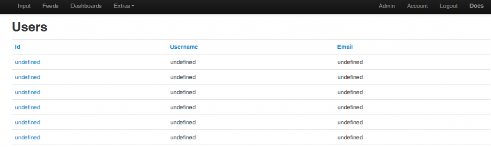I haven't counted them but there are loads, the scroll bar handle is around 1/10th of it's usual size. I have checked with myphpadmin and there is actually only one user.
I tried clicking one of the undef users and found an unpopulated account page, this also switched users and I could no longer see my inputs or feeds. "user1" aka "me" doesn't appear on the list so I had no way back, other than to log out and back in.
2) I created a virtual feed and it seems to work consistently but I keep losing the processlist icons in the feed view, it just says "wait..." I have tried leaving it to sort it's self out but it doesn't, editing and saving the processlist brings it back, but I haven't worked out what triggers the disappearance.
Am I right in thinking the "dependency" on redis has been removed for all but the "low-write" mode as the daily's etc use in-memory-table values not redis, so redis is only "mandatory" for buffering the disk writes now?
This seems like a huge step forward and so far it looks pretty good, I'm still testing and will post some more soon.
Paul
Re: EmonCMS 9.31 | 2016.02.13 released
Paul: 1, 2 & 6 - Now fixed on git (same zip). Let me know if you like it.
Re: EmonCMS 9.31 | 2016.02.13 released
Yes, thanks, I can now see the process list in inputs and the 'updated' time now increments OK.
I notice that on the 'Feeds' page, there is another 'Process List' column which is completely blank. Are you intending to populate this, or remove it altogether to save real-estate.answered by following post!Paul
Re: EmonCMS 9.31 | 2016.02.13 released
The additional column is for the virtual feed process icons, as I mention above it's a bit on the narrow side.
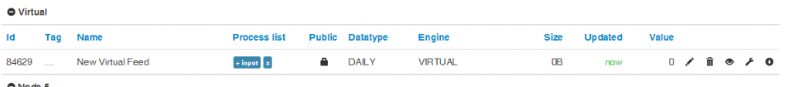
Paul
(EDIT - uploaded disappearing pic again!?)
Re: EmonCMS 9.31 | 2016.02.13 released
Aah, thanks Paul!
Re: EmonCMS 9.31 | 2016.02.13 released
I have been playing with this for a while and I'm not convinced the virtual feeds are behaving as they were intended. they are really good for realtime values but I'm not able to get any "feed" data from them at all. As far as I can make out they seem to be functioning as a "virtual input". They can start from a realtime value, either a feed or an input and you add processing and nothing is persisted unless you log to a feed using a process.
I have created virtual feeds of both types (realtime & daily) from a variety of feed types (and inputs) and have only managed to get realtime values, attached is a screendump of comparison dashboard of "daily total" methods. no matter what I do the bargraphs from virtual feeds always use the same value accross the board, Am I missing something?
I like the way they currently work (not for graphing though), I just don't think they are as you described. As they are I think they should be called "virtual inputs" and moved to the inputs page, that would "fit in" better and be more intuative, plus the processlists would not need to be squeezed into the feeds page. So if they are "broke" and work differently when fixed we may need virtual inputs too :-)
Paul
PS Can the "create virtual feed" button be located at the top and perhaps update the feeds page when saving a newly created virtual feed? there's alotta scrolling and refresh activity required in adding/editing virtual feeds.
Re: EmonCMS 9.31 | 2016.02.13 released
pb66: see this http://openenergymonitor.org/emon/node/10977#comment-32479
Sorry, not completely true, there are two processors that still require redis as in 8.5, they are: ratechange and kwh_to_kwhd.
Daily values use the engine you specify for its feed, can be a memory table but be careful it will lose the data on shutdown.
Paul: that bootstrap errors on console are nothing that can be done, we're using a very old version of the bootstrap lib and updating it requires a major overhaul of the html on the code. Maybe some day... They do no harm anyway.
Meantime i've updated the source files to fix the user list and gave better lookings on fullscreen mode.
Re: EmonCMS 9.31 | 2016.02.13 released
Hi Chaveiro,
I loaded v8.6.0 on a RPi model B with HDD. Here's some feedback:
Like Paul (pb66) I have multiple users (I counted 200 of them)
I noticed after saving my dashboard, two of my realtime graphs displayed Authentication Not Valid in view mode. All three graphs were visible in the editor. One of the graphs remained visible in both view mode as well as edit mode. The simple zoom graphs exhibited the same behavior, i.e. I had to exit and re-enter the editor and save the graph a second time before they were visible in view mode. (screenshots of the realtime graphs attached)
Update - going back into the editor and re-saving them (twice), seems to have resolved the issue.
I also get this error:
No process description available for process ' + feed' with id '29'.
Add a description to Module\process\Views\processinfo.js array.
when I select the +feed or the -feed function on the Add Process screen.
On another note...
I like the way you've reorganized the settings.php file. Moving the dbtest line to the top reminded me to change it to false after the db was set up. (otherwise, I almost always forgot to change it) The order you have the mysql parameters in makes more sense too. (probably because I'm used to seeing them in that order in other config files)
Regards,
Bill
Re: EmonCMS 9.31 | 2016.02.13 released
"As they are, I think they should be called "virtual inputs" and moved to the inputs page, that would "fit in" better and be more intuative, plus the processlists would not need to be squeezed into the feeds page."
I agree with pb66, my initial understanding of 'virtual feeds' has changed since I've started using them, and to make the changes which pb66 suggests would make the concept easier to grasp.
Paul
Re: EmonCMS 9.31 | 2016.02.13 released
Thanks for the "How to use Virtual feeds" guide, I will try them again (later today hopefully)and report back.
Is there a specific reason preventing the last process(es) being converted or is it just work in progress?
The issue Bill explains with the "Authentication Not Valid" in view mode I also experienced but it was late and I couldn't spot a pattern to report, while creating the 4 graph dash above it was like traffic lights each time I edited one would be missing and as Bill reports doing a couple of saves could bring it back but in that time I could lose another, I assumed it to be a cache or memory resource issue but that was just guesswork.
To add to that I did also "suspect" I was losing some edits in the transition from edit mode to view mode, A couple of times I'm (fairly) sure I saved the dashboard and clicked view when the page rendered it was as though the changes had not saved and I had to redo them. I'm not confident either way with this point but I does make me wonder if there should be a "are you sure you want to leave without saving?" pop-up.
@Bill - I believe the "error" you see is actually quite a neat idea to get community assistance to write the ~40 process descriptions, there is a link in the message that opens a github issue on the emoncms repo.
@Paul - I'm glad you agree, I will probally discuss it a bit further on the other thread once I've tried the guide method.
One thing I question about the mandatory need to commence a virtual feed with a specific feed type is, why is that selection from a "short list" not part of the "create virtual feed" pop-up box instead?
Paul
Re: EmonCMS 9.31 | 2016.02.13 released
I believe the "error" you see is actually quite a neat idea to get community assistance to write the ~40 process descriptions, there is a link in the message that opens a github issue on the emoncms repo.
I saw the link, but wasn't sure what to do at that point. But, yes, clever way to get help !
Re: EmonCMS 9.31 | 2016.02.13 released
I have updated from Chaveiro's repo and the army of undefined users have now gone leaving just the one user as expected.
Paul
Re: EmonCMS 9.31 | 2016.02.13 released
PB66:
1 - What do you mean by : "Is there a specific reason preventing the last process(es) being converted or is it just work in progress?"
All virtual feed specific processors must be on the "Virtual" group because there is logic in the UI to hide it on input context. But let it mature a little so latter it can be better organized.
From 8.6, going to edit mode recalculates the correct paths for the current running installation url and makes them relative, its feature referred by trystan above. It says not modified but if you do a save, the correct path are saved to bd and the error disappears.
Sometimes you click the save button but it does not save, its related to sync ajax calls on some graphs that halt the browser for a few ms while fetching the data and the click is missed.
It's realy not mandatory, you can put any available processor as first but if you want the next one to pick up a feed historic value to graph then the previous must "source feed" data for it.
As you saw if you put an input processor it will get the last input value on every data passed to the next processor. The same for +/-* Feed processors, it works with the last feed value.
The only logic i implemented was to remove every processor that allow to create a feed, that is because if a processor allow to create a feed then it writes data to the feed.
If a virtual process list used then, every time you open a graph it would save that graph data to the feeds, not good.
But again, lets explore the potential of mixing processors for now, before imposing more limits.
Anyone tried using other engines besides mysql ?
Re: EmonCMS 9.31 | 2016.02.13 released
Yes, MySQL Memory Storage.
It works very well as intended, but struggling to find an example where it could be used....
http://openenergymonitor.org/emon/node/11027
Paul
Re: EmonCMS 9.31 | 2016.02.13 released
Anyone tried using other engines besides mysql ?
I'm using fina, fiwa and timeseries. All 3 appear to be operating normally.
Re: EmonCMS 9.31 | 2016.02.13 released
I have updated from Chaveiro's repo and the army of undefined users have now gone leaving just the one user as expected.
Paul,
How'd you do your "update?"
Cheers,
Bill
Update - got it figured out. User list reads normal now.
Re: EmonCMS 9.31 | 2016.02.13 released
Updated again and the modal processlist really is a fantastic improvement !!
Re: 1) was referring to your "Sorry, not completely true, there are two processors that still require redis as in 8.5,
they are: kwh_to_kwhd and kwh_to_kwhd." comment, I just asking if there was a reason these "still" require redis, can they not be changed or have they just not been done yet?
2) "All virtual feed specific processors must be on the "Virtual" group because there is logic in the UI to hide it on input context." this also relates to 4) as if they weren't there (ie moved to create box) they wouldn't need hiding. "But let it mature a little so later it can be better organized." Absolutely!!
3) I didn't use "a current running install", I did download a backup of the inputs and feeds but no dashboards or visualizations, therefore url's were used. So it would seem the urls are not being set correctly on creation and only 2+ subsequent saves will correct itself.
4) (further to point 2) Not being mandatory could be good although confusing. and the fact they are "processed on demand" by viz could also be misleading, the excluded persistence type processors could actually be a valuable asset too (with a different trigger), effectively most processing could be done in ram for realtime displays like dials or "total so far today" boxes etc using "virtual feeds" and only write the feeds we need persisted,
"But again, lets explore the potential of mixing processors for now, before imposing more limits." I agree, for this "tester only" version all possible options (including write to feed?) should be active to be explored and from using it the best combinations can be found and perhaps even bundled up as different types of virtual feed with any necessary restrictions/exclusions to assist their use (prevent errors) IF required.
There are definitely a lot of possibilities here!
Re: EmonCMS 9.31 | 2016.02.13 released
Made this thread sticky, just want to reiterate that its great to see all these developments Chaveiro! and I look forward to diving into this and learning from your work as this goes on.
Re: EmonCMS 9.31 | 2016.02.13 released
I cloned my dashboard, and all of the graphs on the copy were flattened vertically.
(screenshots attached)
I deleted the flattened dash, and cloned my main dashboard a second time. The second cloned dash, flattened like the first clone, wasn't visible until I exited the editor and saved it twice. The first clone was visible immediately after being created.
Re: EmonCMS 9.31 | 2016.02.13 released
I think that I may have found the problem with the 'My Electric' app graph being squashed and not displaying correctly (as described above).
The 'My Electric' bargraph feed is a phpfina feed fed via a 'Power to kwh' process, and upon checking it with the feed 'data viewer' I found that the increments had returned to zero (see screenshot below), as have all feeds which used the 'Power to kwh' process.
The time when the this occurred - 7pm July 21st, was the time when I installed v8.6!
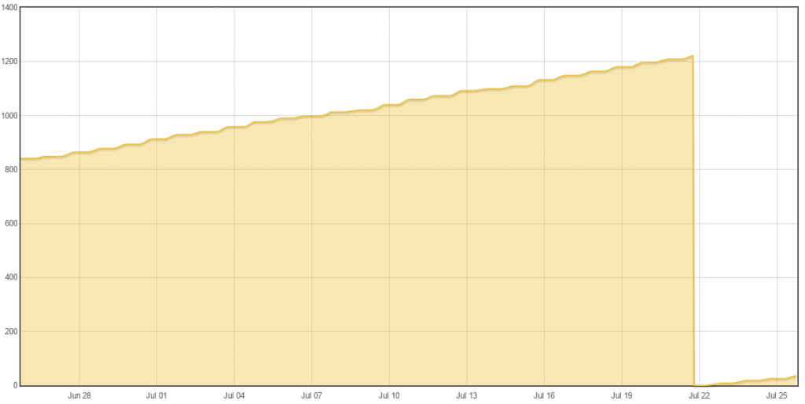
This is a screenshot of the issue as reported above - I probably should have checked the feed earlier, especially as the USE TODAY was telling me -489.4 kWh!
Anyway, the feeds have been deleted, and hopefully My Electric will be OK, but it will take a day or so to tell.
Paul
EDIT 26/7 - My Electric is now working fine after I deleted the original feed and made a new one. I wonder why this occurred as it affected every feed using a 'Power to kwh' process after installing v8.6.
Re: EmonCMS 9.31 | 2016.02.13 released
A mix of both FIWA and FINA. i.e. the three graphs at the top (realtime) are FIWA.
The kwh graphs are FINA. I installed 8.6.0 on the 23rd.
Here's what one of the FINA feeds looks like viewed w/the data viewer:
Re: EmonCMS 9.31 | 2016.02.13 released
Hey Bill, if you have backups and fancy trying something, force a save ( or 2?) on your source dashboard by editing or adding a text box that can then be removed again, and try cloning after the saves, It's a long shot but I wonder if there is a "will get changed at next save" type update being circumvented by cloning ??
The need for multiple saves may be connected we've seen that already
Paul
Re: EmonCMS 9.31 | 2016.02.13 released
Hi PB,
I gave it a go. I think you may be on to something...
Here's the results:
First pic is of my src dash modified by shrinking one graph and adding some text.
Second pic = src dash clone, 1st try.
Third pic = src dash clone, 2nd try.
Re: EmonCMS 9.31 | 2016.02.13 released
This happened while I was still in the editor changing/cloning my src dash.
Flat as day old beer!
Re: EmonCMS 9.31 | 2016.02.13 released
Could it be this Bill - http://openenergymonitor.org/emon/node/10931
Paul
Re: EmonCMS 9.31 | 2016.02.13 released
I'll have a look at that later today. It's a bit past 3 am, so I'm off to the horizontal position for a few hrs. Will let you know what I find.
Thanks!
Re: EmonCMS 9.31 | 2016.02.13 released
Updated git today.
Bill:
1 - Cloning a dashboard does not modify it, your issue is strange. What browser are you using? What is the value of the option parameter height, percentage or pixels?
2 - What's wrong with that kwh graph? Can you post a printscreen of a multigraph with measured power and kwh feeds at the same time.
PB:
3- For all reported dashboard save problems I've added a messagebox displaying success or not, if the message dows not apear the button click was not proceessed..
Paul:
4 - That kwh reset was because at some time during the emoncms update the DB feeds table got 0 for last value.
5 - Check if app width is ok now.
Re: EmonCMS 9.31 | 2016.02.13 released
Loaded 8.6.0 preview, dated 26July.
When I click the orange save button in the dashboard editor, the button remains orange and nothing gets saved. Tried clicking the button more than once.
(When I go back to view mode, the changes are gone, I get the unedited dashboard)
Re: EmonCMS 9.31 | 2016.02.13 released
Hi Chaveiro,
I use Firefox, but it behaves the same way in Chrome. Param h and w are both set to percentage.
I'll try with them set to pixels.
2 - What's wrong with that kwh graph? Can you post a printscreen of a multigraph with measured power and kwh feeds at the same time.
Which kWh graph are you asking about? (I posted more than one pic)
Re: EmonCMS 9.31 | 2016.02.13 released
Screenshot of cloned dashboard (in editor, db isn't visible in view mode) using Chrome browser.
Re: EmonCMS 9.31 | 2016.02.13 released
Looking better with tonights update (screenshot)
Only one slight issue - the 'Account' page has slipped to the left when viewed on a laptop - see here, however the same page when viewed on mobile device is fine (screenshot).
I've cleared the browser cache and tried both Firefox & Chrome - both display the same.
Paul
Re: EmonCMS 9.31 | 2016.02.13 released
Dashboards created yesterday, with the 2015.07.25 version are visible in view mode. Dashboards created today with the 07.26 version are only visible in edit mode. (and are sqaushed vertically)
Re: EmonCMS 9.31 | 2016.02.13 released
'When I click the orange save button in the dashboard editor, the button remains orange and nothing gets saved. Tried clicking the button more than once.' - Bill
Same here. I can see all of my existing dashboards OK, and can add widgets, graphs, etc, however cannot save any changes - button remains orange.
Paul
Re: EmonCMS 9.31 | 2016.02.13 released
In developers mode, the Chrome browser reports the following error when 'dashboard' save is pressed;
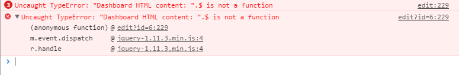
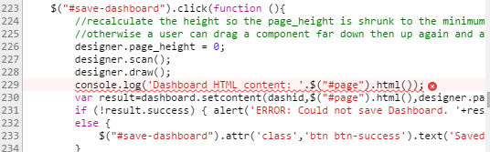
Paul
Re: EmonCMS 9.31 | 2016.02.13 released
Only one slight issue - the 'Account' page has slipped to the left when viewed on a laptop - see here, however the same page when viewed on mobile device is fine (screenshot).
I've cleared the browser cache and tried both Firefox & Chrome - both display the same.
Same on my desktop. Both Chrome and FF. Didn't try it on my mobile.
Re: EmonCMS 9.31 | 2016.02.13 released
Chaveiro,
I reset two of my graphs to pixels - top left corner and the one immediately under it - (had to revert to v07.25 temporarily) and left the rest set to percentage.
The graphs set to pixels are OK after cloning, the graphs set to percentage are squashed.
Update - The two graphs set to pixels are visible in view mode, the others are not. All of them are visible in edit mode.
Re: EmonCMS 9.31 | 2016.02.13 released
Same screen, after cloning, with all graphs set to pixels vice percentage:
Re: EmonCMS 9.31 | 2016.02.13 released
The 07/27 should be ok now.
Re: EmonCMS 9.31 | 2016.02.13 released
The cloning issue is fixed, as is the slight offset to the left, and the save button issue. When I save a dash board edit, the dialog box says "Multigraph saved" whether its a realtime graph, a simplezoom, etc. I don't have any multigraphs on my dash.
Otherwise, looks/works good!
Loaded a copy on my Odroid C1 too. Appears to be working OK.
(fairly well screams along compared to the Rpi Model B!)
Re: EmonCMS 9.31 | 2016.02.13 released
Dashboard edits still require two saves before becoming visible in view mode.
Re: EmonCMS 9.31 | 2016.02.13 released
07/27 is a step closer, the 'Account' page looks fine - desktop & mobile, and the error reported above when desktop save is pressed has cleared, however I'm also experiencing the same issue as Bill;
"Dashboard edits still require two saves before becoming visible in view mode."
If I add a graph to a dashboard, press save, I get the "Multigraph saved" message (which I'm sure could be changed to "Changes saved"). At this stage, checking phpmyadmin, I can see that the graph details have been correctly added and saved to the respective dashboard table in MYSQL (screenshot).
If I then select view, I can see an error reported in the browser developer console (screenshot), and the new graph shows 'authentication not valid'.
Hope this helps!
Paul
Re: EmonCMS 9.31 | 2016.02.13 released
You say it needs two saves. The message 'multigraph saved' appears everytime you click save?
Re: EmonCMS 9.31 | 2016.02.13 released
Hi Chaveiro, I have just updated again, I didn't experience some of the issues above so cannot comment on them, but Bill and Paul's feedback seems good. I will update if I experience the "need for multiple saves to display" issue.
I really like the input deletion warning message, it looks good and works well except (sorry!) there are instances when a lot of inputs can be generated by accident and deleting them was a pain in the backside, but as the screen scrolled they were quick to delete as you could just (fairly) rapidly keep clicking on the same point of the screen to work through a list, now with this lovely warning it's a horrendous task (as I just discovered, my fault for not deleting all the false inputs I created Friday before doing this last update) . I know you may have based this added check on my many posts advising about using feeds not inputs in processlists, but I think there is an equal need to be able to delete false inputs too, Could logic be added so the confirmation screen only appears if there is a processlist present for that input? (this would mimic the current input cleansing logic) or the ideal test would be AND if the input is not referenced in any other processlists either, this latter test, although far from essential could also be extended/reused for a "cleanse inputs" button in admin to acurately remove all "unused" inputs.
The message displayed when the save button is clicked on the edit dashboard screen doesn't prevent you navigating away from the page before clicking the save button, what I had in mind was catching aborted and unsaved edits with a "You have not saved your edits! 'SAVE' now or 'CONTINUE' without saving" pop-up, (styled like the new input deletion box) when you try and navigate away, like those annoying "are you sure you want to leave this page? 50% discount, only if you buy now" sales pages do.
The dashboard save button already turns green when clicked so I'm not overly convinced the message adds much but if I'm honest I'm probably just put off by the standard plain box, it looks like an error message and triggers a "oh, crap" reaction before even reading its content.
These are pretty minor points, on the whole I really like the direction the changes are going in. excellent work!!
Paul
Re: EmonCMS 9.31 | 2016.02.13 released
Hello Chaveiro, just tested the REDISBUFFER that you mentioned in the change log for the phpfina engine, wow! that it now merges the data in the buffer with the data on the disk is a massive step forward!
Do you have plans to do the same for the PHPTimeSeries engine?I see its on the todo!I will get this running on an emonpi as a test. I will look into adapting the nodes module to work with your new process model arrangement. https://github.com/emoncms/nodes
Re: EmonCMS 9.31 | 2016.02.13 released
Really like the server info, redis flush and the notification about the log file on the admin page too, thats really nice.
Re: EmonCMS 9.31 | 2016.02.13 released
@Trystan - "the notification about the log file" You should have a 25line "tail" live error log too.
Paul
Re: EmonCMS 9.31 | 2016.02.13 released
Trystan, check this too, maybe a merge of the two is required : https://github.com/emoncms/node and https://github.com/emoncms/nodes
Re: EmonCMS 9.31 | 2016.02.13 released
The node module is an old module for decoding rfm12/69 packet data in emoncms. The new nodes module is a different thing it is designed for close integration with emonhub which does the decoding of the packet data, it follows the rfm12/69 nodes, tx, rx variable structure.
I will archive the emoncms/node repository to avoid confusion.
Wow, really like the live error log, very nice
I've just tested the nodes module and it works (using its own cut down processing) once I added these lines to route.php
if (count($args) > 2) { $this->subaction = $args[2]; }
$this->method = "GET";
if ($_SERVER["REQUEST_METHOD"]=="POST") $this->method = "POST";
if ($_SERVER["REQUEST_METHOD"]=="DELETE") $this->method = "DELETE";
if ($_SERVER["REQUEST_METHOD"]=="PUT") $this->method = "PUT";
So next step is to power up an emonpi and switch over to this branch to test.
Re: EmonCMS 9.31 | 2016.02.13 released
The dashboard save button already turns green when clicked so I'm not overly convinced the message adds much but if I'm honest I'm probably just put off by the standard plain box, it looks like an error message and triggers a "oh, crap" reaction before even reading its content.
These are pretty minor points, on the whole I really like the direction the changes are going in. excellent work!!
Agree with you on both points, Paul. The MsgBox does seem redundant.
Chaveiro,
You're knockin' it outta th' park!
Re: EmonCMS 9.31 | 2016.02.13 released
Wow, like the new menus & icons!
Haven't had chance to use 07/28 much, but what I've seen is visually impressive.
Paul
Re: EmonCMS 9.31 | 2016.02.13 released
The menu icons is a trial to simplify the menu for 8.6, open to ideas.
Paul, i cant reproduce the dash not saved error.
I do get an error but it's ok. If i save a dashboard without any change to the ui, or moved arround the graph but leave on the same place and try to save, the sql update returns 0 changes and it's like an error but just move the graph to the side and changes are saved.
Was this the error you were referring to?
Re: EmonCMS 9.31 | 2016.02.13 released
No. I have created a dashboard called 'test' and added a graph to it which has been configured to a feed. Then saved the dashboard and the 'save' button turns green.
If I view the dashboard I see the message 'Authentication not valid' on the graph, however if I then select dashboard 'edit' I can see the dashboard ok!
Now you have access to that dashboard, please have a look and try yourself. It's probably easier to see than to describe!
Paul
Re: EmonCMS 9.31 | 2016.02.13 released
I have created a dashboard called 'test' and added a graph to it which has been configured to a feed. Then saved the dashboard and the 'save' button turns green.
If I view the dashboard I see the message 'Authentication not valid' on the graph, however if I then select dashboard 'edit' I can see the dashboard ok!
I did something similar last night, after loading the 07.28 version. I saved a change to a dashboard, but then decided "just to see what would happen," to refresh my browser. Saw the same thing Paul did, i.e. Authentication not valid.
After the second modify/save cycle, the graph was visible in view mode, error msg was gone.
Re: EmonCMS 9.31 | 2016.02.13 released
I'm still seeing the same "2 x saves required" issue too. I have tried saving-edit-save-view and switching dashboards before selecting view to locate the issue and came to the same conclusion that the graph is not being populated until you enter the edit screen for the second time, and save. the reselection of the edit page is the crucial part of the second save.
When following this with phpmyadmin you can see the dash record changes on the save by adding to the url eg
"&feedid=21510&colour=000000&units=&dp=&scale=&fill=""
So it seems to be linked to the url change mechanisium. That is also confirmed by editing /var/www/emoncms/Modules/dashboard/Views/dashboard_view.php line 34 so " var reloadiframe = 1; " not 0, this allows the graphs to populate first time but probally won't be a fix as it will probably interfere with the existing url's getting updated, but hopefully it will shed some light on the subject.
Paul
PS here is the before and after 2nd save "content" for the example above
<div id="1" class="rawdata" style="position:absolute; margin: 0; top:160px; left:400px; width:400px; height:300px;" feedid="21510" colour="000000" units="" dp="" scale="" fill=""><iframe frameborder="0" scrolling="no" marginheight="0" marginwidth="0" src="/emoncms/vis/rawdata?embed=1" style="width: 400px; height: 300px;"></iframe></div>
<div id="1" class="rawdata" style="position:absolute; margin: 0; top:160px; left:400px; width:400px; height:300px;" feedid="21510" colour="000000" units="" dp="" scale="" fill=""><iframe frameborder="0" scrolling="no" marginheight="0" marginwidth="0" src="/emoncms/vis/rawdata?embed=1&feedid=21510&colour=000000&units=&dp=&scale=&fill=" style="width: 400px; height: 300px;"></iframe></div>
Re: EmonCMS 9.31 | 2016.02.13 released
pb66 - Paul, I'm seeing exactly the same via PHPMyAdmin.
Paul
Re: EmonCMS 9.31 | 2016.02.13 released
I figured it out, should be ok on today release.
About the menu icons what do you think?
Re: EmonCMS 9.31 | 2016.02.13 released
Chaveiro,
Silly question... which "menu" and "icons" are you talking about?
Thanks,
Bill
Re: EmonCMS 9.31 | 2016.02.13 released
Since 07/28 version.
This ones:
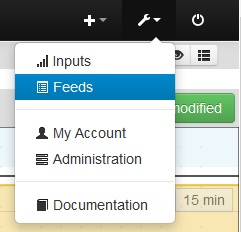
Re: EmonCMS 9.31 | 2016.02.13 released
Glad you figured it out! seems to have done the job, the red "not configured" is a nice touch too.
Jury is still out on the icons :-) I want to like them but I'm just not sure they are intuitive enough until you click them, The right hand ones are ok but I think the dashboard links could be more prominent for easy day to day navigation, perhaps having a few user "featured" dashboard links on the main menu bar, (which would justify the use of icons to free up the space) whilst keeping a dashboard menu/icon with the other settings icons.
I definitely prefer the use of the main menu bar over the previous dashboards "sub-menubar" though.
I see you added a 15min test to the input deletion, IMO that adds to the frustration of wanting to correct a mistake at the time of making it while not protecting inputs that update less frequently than 15mins, the inputs that I always used to have problems with prior to adding a redundant feed to secure them updates twice daily. I think for now at least, it should just check for a processlist only, that is more protection than we previously had and the processlists are the bit that take the time to rebuild so the warning/confirmation is well worth having to protect them specifically. I guess it could always be made a configurable time (or edited locally) if needed (I also think it counts NaN's as less than 15mins too)
Just noticed I don't seem to be able to bring up a list of dashboards any longer, I was wondering if the "star" could be used to elevate a dashboard to "display on main menubar" status???
Paul
Re: EmonCMS 9.31 | 2016.02.13 released
I'm thinking on putting the Main dashboards directly accessible from the top menu.
The dashboard list is accessible from the right icon on submenu while on any dashboard.
I choose to use also the time check on input deletion because you can use an input without a processlist that is used on an input processor in other processlist. 15min is not so long and updated inputs need a warning. Why are you getting so much phantom inputs anyway?
Re: EmonCMS 9.31 | 2016.02.13 released
I'm thinking on putting the Main dashboards directly accessible from the top menu.
Yes! Please do. I prefer the old style of dashboard access, straight from the main menu bar. Having to pull down a menu to get to an item that's used quite a bit makes it somewhat inconvenient. Wouldn't it make more sense to put often-used items on the main menu bar, and the lesser-used ones on a pull-down menu?
I didn't have the menus on the 07/28 version, so I Loaded 07/29. Menus look Great! Dashboard editor checks out good.
The icons are nice, but I've found I prefer a plain text dropdown menu. Maybe add a user option to to toggle the icons?
Re: EmonCMS 9.31 | 2016.02.13 released
I've noticed my 8.6.0 graphs look better than the pre-8.6.0 graphs. The lines look finer and overall the graph a bit more detailed. Have you gents (PB & PR) noticed that with your graphs?
Top pic is graph from an 8.4.0 dash, bottom pic is graph from an 8.6.0-07.29 dash.
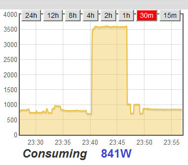
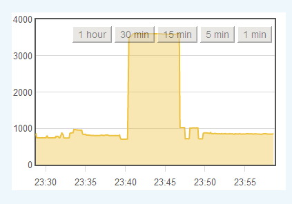
Re: EmonCMS 9.31 | 2016.02.13 released
"The dashboard list is accessible from the right icon on submenu while on any dashboard." The dashboard list 'page' is indeed accessible from the icon on the right of each dashboard, but the list is not populated.
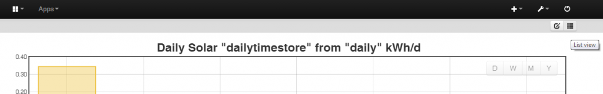
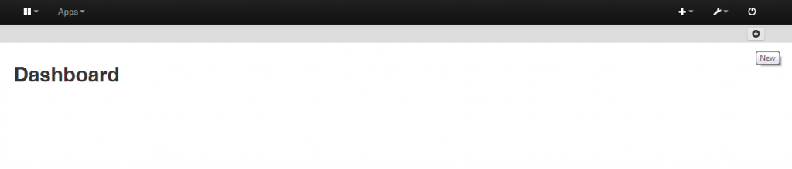
Can I also suggest adding a "view" and/or "edit" icon to the list view (the rightmost icon matching the preceding page) so that you can click to list and click to return to the page you were on without moving the mouse? currently the "add" button moves under the mouse which results in an additional dash if clicked like so.
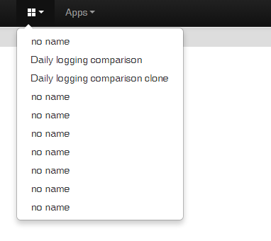
for which there is currently no "in-house" means for me to delete them.
Personally I get extra inputs from either experimenting for development or recreating support issues, I also occasionally get rogue nodes showing up that slip through the rfm network group and crc checks, this isn't uncommon some users never see it some are plagued by it. Also scenario's like not defining a nodeid in a input api url can cause many many inputs to be created by accident as we have seen frequently with NanodeRF use.
I love the deletion confirmation box and I think it is better to have it than not, but I would not agree the 15mins helps anything as something that updated only 16mins ago can deleted without warning so the time is too short and inputs are added in error 15mins is too long to wait to delete them. The sometimes you get a warning and sometimes you don't can only work if it's fool proof ie linked to an actual "input ref test". If that is not easily done then just revert to having the warning for all inputs regardless (with a "remove check" option in settings) or only for those with a processlist and we recommend adding a "redundant" process as a place holder. The latter would work much better for emoncms.org as the settings are not accessible and if the "clean" input function is run it will delete the "believed to be safe" process-less inputs regardless of the 15min rule anyway. and this will still need to be done for any process-less inputs with an update interval of over 15mins anyway!!
@Bill - I had noticed a general crispness not just with the graphs but also with the input page processing icons,
The graphs do look better but (sorry Chaveiro) I have to say I prefer the old bold multi-color icons (see attached pics) the new ones maybe more descriptive but with my eyesight late at night, they all look the same it seems to me to be a step in the opposite direction to the menu icons :-(
Also can I ask your thoughts about setting line 91 of /var/www/emoncms/Lib/tablejs/table.js to " if (table.groupshow[group]==true) {symbol = '<i class="icon-plus-sign"></i>'; visible = "display:none";} "?
This will open the inputs and feeds pages with all the groups collapsed rather than expanded making a very tidy page. This would also allow a node name and details etc to be added to the top line (at a later date). I previously suggested this when Trystan first changed the processlist page (see Suggestion for the new "Inputs" view) , the way the processing page is now modal works even better. (I've attached a couple of mock-ups i did at the time.)
Paul
Re: EmonCMS 9.31 | 2016.02.13 released
The dashboard list 'page' is indeed accessible from the icon on the right of each dashboard, but the list is not populated
I've only got two dashboards, but both are shown when I click the list icon.
Re: EmonCMS 9.31 | 2016.02.13 released
@Bill - I had noticed a general crispness not just with the graphs but also with the input page processing icons,
OK. Just wanted to make sure my eyesight wasn't headed south! ;-)
The graphs do look better but (sorry Chaveiro) I have to say I prefer the old bold multi-color icons
Me too. Makes it easier to see, for lack of a better term, the "flow."
This will open the inputs and feeds pages with all the groups collapsed
Definitely like the look of that change!
Re: EmonCMS 9.31 | 2016.02.13 released
Aha!! The reason my "dashboard" list isn't populated is because of the "collapsed by default" mod I made in table.js. ie the table is collapsed with no groups as there is currently no "groupby" provision in dashboards, so I need to look into that.
Paul
Re: EmonCMS 9.31 | 2016.02.13 released
So in-addition to the table.js edit I have now inserted a new line " table.groupby = 'name'; " after line 70 of dashboard_list.php. Intended as a test It actually works really quite well (aside from the field labelling) in that you can already "name" multiple dashboards the same name so that is effectively a group tag and the "alias" is the true name (and should be used in the menubar if that is pursued further)
See attached screen dump, "No name" id 1 can be found at http://raspberrypi/emoncms/dashboard/view/dashA and if featured on the menubar (perhaps defined by selecting "main" ???) it should be called dashA.
Paul
PS what happened to the description field in the list view??
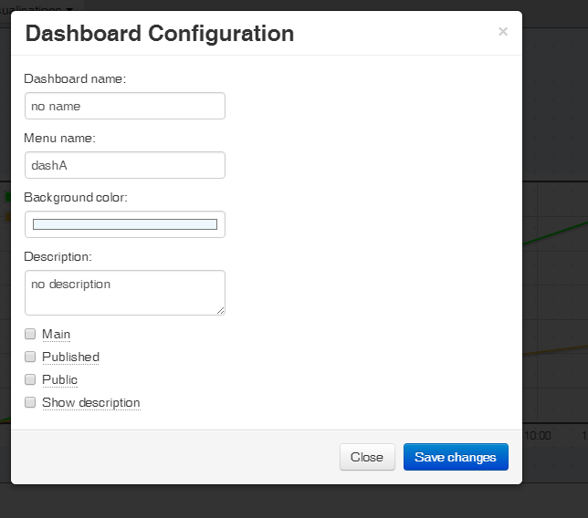
Re: EmonCMS 9.31 | 2016.02.13 released
"I've noticed my 8.6.0 graphs look better than the pre-8.6.0 graphs"
- That is because of "gpu adaptive refresh rate, more responsive" mod, the shadow on realtime graph was removed to be fast.
I had to remove the colors for processlist because it was bundled in code that filled an abbreviation code for each processor and required additional work every time a new processor was added. Was incomplete too. This simplifies further development.
The input description is in fact the name of it on the UI for some historical reason.
Naming a node is a good thing but its tied to the node id, with current architecture it can only be implemented like the feeds tag attribute, on every line. We could untie the nodeid -> name and add a new Tag parameter, but i see great confusion that could come from a group by tag from diferent nodes. Maybe a review and merge of input module with the node module that trystan did could be a good time to implement both features.
The dashboard description in only on that config page, for internal note i believe. There is a showdescription field on db but not used, some halted development i believe. Anyone remembers?
If you want to group dashboards than a tag needs to be added. the dashboard name is what you see in the menu, the alias is what you can use to share a public published dashboard, see info from setting comments:
// Allows http://yourdomain.com/[username]/[dash alias] or ?id=[dash id]
// Alternative to http://yourdomain.com/dashboard/view?id=[dash id]
Re: EmonCMS 9.31 | 2016.02.13 released
07/29 has sorted the 'dashboard' save issue, and has resulted in a very intuitive experience due to the changing button colours and the changing messages.
I can't say I'm too bothered about the process list icons, both look good to me!
I'm really liking the icon menu bar, but the 'App' stands out as the only 'non-icon'. I presume that's because the 'App' name is brought forward from app/app_menu.php - could it be replaced by an icon as a result of a condition?
Whilst on the subject of menus... there has been a long standing annoying bug in emoncms for several months, which is also present in v8.6 although I'm not sure if it's a result of code within emoncms or the app itself (app/app_menu.php)?? I have tried (and failed!) to fix it, and it concerns menus when using emoncms on a tablet or phone (Its ok on a lap/desktop).
When switching between dashboards using the menus, the expanded menu collapses after a selection has been made, but not so when switching between one 'app' function and another 'app' function. For example, you're currently on the 'My Electric' page, and using the menu decide to switch to 'My Solar', but although the 'My Solar' app loads ok, the menu is still expanded and does not automatically collapse as per the screen shot below. I've tried it on a ipad, 8" android tablet, iphone & HTC smartphone, so it's not just on one device.
Paul
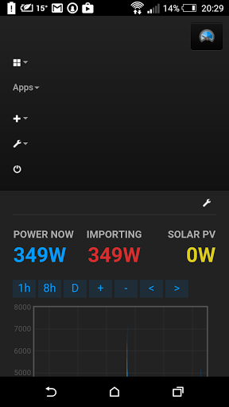
Re: EmonCMS 9.31 | 2016.02.13 released
Paul that is something with the app.
Re: EmonCMS 9.31 | 2016.02.13 released
Chaveiro, can you take a look at this post pls re app menus not collapsing.
Paul
Re: EmonCMS 9.31 | 2016.02.13 released
I think this version should be a major revision with all the new features and changes plus it is a one version fit all. So renamed it to 9.0.
PHPFIWA will not support low-write soon, engine must be disabled in config if on low-write mode devices.
If anyone wants to take development of it the template engine has all explained.
PHPTIMESERIES seems ok, but test and give feedback, i dont use it.
Will be on holidays next week so development will slow down.
Re: EmonCMS 9.31 | 2016.02.13 released
The menus now collapse nicely between changes from 'app' to 'app' - great!
With all dashboards 'unpublished', the new menu renders nicely on mobile devices, and fits well, however as published dashboards are introduced, we quickly run out of available width and the menu runs onto 2 lines.
The stars are not really helpful anyway because you cannot tell which dashboard you are selecting.
Would it be possible to hide the 'Published' dashboard icons on mobile devices (phones width).
I've tried the $menucolapses = true; (collapses)
But of course that brings back the ugly original nav icon, and introduces more clicks to navigate.
Paul
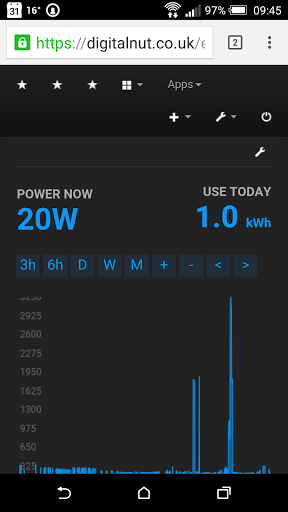
Re: EmonCMS 9.31 | 2016.02.13 released
Hello Paul,
Updated repo, check it now. Hides published dashboards on <480px and menu-extra, menu-right < 320px.
On larger displays or collapsed mode the name is shown. If you have a mouse overing on top displays the name.
Also you will tend to remember the star position used often.
The idea is that in future apps are dashboards components that you use to create your own dashboard mixing with any other component. So that you don't need apps menu, they are configured from dashboard editor.
If there are many published dashboards or modules with menu, there will always be menu wrap on larger resolutions, some fine tuning can be done when that happens.
This is best i can do with old bootstrap, see if you like it better.
Other option is to revert to collapsed style setting $menucollapses = true on config
Re: EmonCMS 9.31 | 2016.02.13 released
Yes, I'm just looking at it now, and it's much better on a mobile device, the menu looks neat and well laid out as well as functional.
I'm just trying to find out what this means;
Paul
Re: EmonCMS 9.31 | 2016.02.13 released
That's Bills request for default to close all inputs or feed tables group by. I think they should all be opened on page load.
Now if you double click one group, all others close. Its a different implementation to solve the same problem.
Re: EmonCMS 9.31 | 2016.02.13 released
Aaah yes, got it!
Paul
Re: EmonCMS 9.31 | 2016.02.13 released
That's Bills request for default to close all inputs or feed tables group by.
Hi Chaveiro,
Is this the request you're speaking of?
I'm thinking on putting the Main dashboards directly accessible from the top menu.
Yes! Please do. I prefer the old style of dashboard access, straight from the main menu bar.
I've checked the entire thread, and that's the only request I've made, but it doesn't appear it has anything to do with inputs or feed tables.
Maybe pb66 made that request?
Bill
Re: EmonCMS 9.31 | 2016.02.13 released
Regardless of who made it, it's a helpful feature, especially when you have lots of inputs divided up into various groups, to be able to quickly collapse them, by group, or all together.
Paul (pb66) & Bill - what's your thoughts on the new menus? Reading in another post, I think we are awaiting the menu code to be updated by Trystan in the 'app' module before we will see an 'app' icon appear on the menu bar.
Also, I've noticed that the 'published' dashboards that are listed on the menu bar as menu items, are using 'bolded' text, unlike the other menu bar items, shouldn't there be some consistency.
Paul
Re: EmonCMS 9.31 | 2016.02.13 released
it's a helpful feature, especially when you have lots of inputs divided up into various groups, to be able to quickly collapse them, by group, or all together.
The feed group collapse works OK. (If I recall correctly, that feature has been in emoncms for quite some time)
Is the inputs page supposed to be able to be collapsed in the same manner as the feeds page?
Bill - what's your thoughts on the new menus?
I prefer the old menu bar. (e.g. v8.4.0) For me, menus, in general, get in the way. (i.e. not singling out the menus that Chaveiro has added to the UI)
Re: EmonCMS 9.31 | 2016.02.13 released
A very minor issue I've noticed with the introduction of 'Highlighting the current page on menu' is;
The background colour of the navigation bar is #333, but when for example a dashboard is selected, the 'Dashboard' cell of the navigation menu changes to #111
I realize that by design, the font colour becomes lighter to indicate the current selected dashboard, but I don't think that the background cell colour should also change.
It's very subtle - but noticeable!
Paul
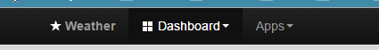
Re: EmonCMS 9.31 | 2016.02.13 released
Sorry if i confuse the names Bill and Pb66.
Paul, that dark highlight is a feature of bootstrap, cant do anything to it in an (code) elegant way.
See http://getbootstrap.com/2.3.2/components.html#breadcrumbs and scroll up a few lines.
Re: EmonCMS 9.31 | 2016.02.13 released
It's a minor issue, and is insignificant compared to the advances that you have made.
IMO the new menus are much more intuitive, and the more I use them, the more I like them!
...but as 'testers' we are just making you aware of our observations, not criticizing!
Paul
Re: EmonCMS 9.31 | 2016.02.13 released
Sure i don't take as a critic, all inputs are good.
Re: EmonCMS 9.31 | 2016.02.13 released
Sorry if i confuse the names Bill and Pb66.
NOT a problem. To paraphrase Paul Reed, you've definitely advanced emoncms.
Re: EmonCMS 9.31 | 2016.02.13 released
Additional comments here - https://github.com/emoncms/emoncms/pull/364
Paul
Re: EmonCMS 9.31 | 2016.02.13 released
Tried the MQTT option in v9 tonight, and appears to publish data OK (without starting the phpmqtt_input.php module).
But running the phpmqtt.php module via;
$ sudo php /var/www/emoncms/scripts/phpmqtt_input.php
I get the following error reported;
Also, Chaveiro, Paul (pb66) has noted that Lib/phpMQTT.php has been updated a couple of months ago to include 'auto connect', could it be updated in v9 pls. - https://github.com/bluerhinos/phpMQTT
Paul
/// EDIT 12/8 - Answered Below!
Line 39 of process_model.php contains;Should Schedule be schedule?Re: EmonCMS 9.31 | 2016.02.13 released
(NOW SORTED)
I'm coming from 8.4, just testing out v9. Having some issues submitting data from emonhub. The error I'm getting is:
2015-08-13 16:56:29,393 WARNING emonCMS_local send failure: wanted 'ok' but got '<br /> <b>Notice</b>: Trying to get property of non-object in <b>/var/www/html/Modules/feed/feed_model.php</b> on line <b>728</b><br /> <br /> <b>Fatal error</b>: Uncaught exception 'Exception' with message 'ABORTED: Feed '64132' does not exist.' in /var/www/html/Modules/feed/feed_model.php:421 Stack trace: #0 /var/www/html/Modules/process/process_model.php(333): Feed->get_timevalue('64132') #1 /var/www/html/Modules/process/process_model.php(174): Process->power_to_kwhd('64132', 1439484816, 734.88, NULL) #2 /var/www/html/Modules/input/input_controller.php(169): Process->input(1439484816, 734.88, '24:0,1:63790,29...') #3 /var/www/html/core.php(64): input_controller() #4 /var/www/html/index.php(106): controller('input') #5 {main} thrown in <b>/var/www/html/Modules/feed/feed_model.php</b> on line <b>421</b><br /> 'Is there some change thats needed in emonhub? has the API changed from 8.4 to 9? thanks for any help
Re: EmonCMS 9.31 | 2016.02.13 released
What type of feed is feed 64132 ?
the problem is in emoncms and instead of returning "ok" it is giving details of the error which emonhub logs
Have you enabled all the engines in settings.php?
Paul
Re: EmonCMS 9.31 | 2016.02.13 released
That's the weird thing, feed 64132 doesn't actually exist. Turns out that migrating to v9 brought back some old processes on the inputs page which were deleted ages ago. I just deleted them and now it's started working. Also had to update the timezone as that was in the old numerical format. thanks!
Re: EmonCMS 9.31 | 2016.02.13 released
That is odd, as far as I know the processes are retained in one string array in one field of the input table for each input, you either have a list or you don't, it's not compiled or constructed. is it possible there was a outdated copy of the input table found?
Paul
Re: EmonCMS 9.31 | 2016.02.13 released
@ Paul - I only just spotted the 12/8 edit to your post above, I suspect it is correct as Schedule is the class rather than the instance (but I'm still finding my feet with php)
Paul
Re: EmonCMS 9.31 | 2016.02.13 released
Thanks Paul - I really should leave code to the experts!!
Paul
Re: EmonCMS 9.31 | 2016.02.13 released
So i've been away for a few days.
Any issues with this version?
Re: EmonCMS 9.31 | 2016.02.13 released
Hi Chaveiro. Only problem I'm having is with MQTT - detailed here. otherwise it's rock solid.
I don't know if Trystan has updated the apps with the icons yet, last time I looked he hadn't.
Paul
Re: EmonCMS 9.31 | 2016.02.13 released
I am still having issues with the My Electric app - not really sure it is a problem with your v9 however?
The instantaneous feed is fine but the *Use Today* and the daily bar graph are very much out of whack.
In the screenshot below, the actual usage today was 21.87kWh, And I am using about 30-40kWh on average per day (middle of winter here). So something is very much awry...
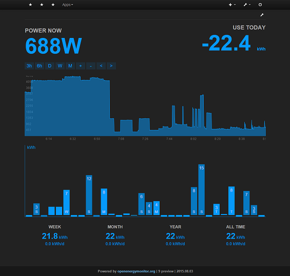
Re: EmonCMS 9.31 | 2016.02.13 released
...and yet it works fine here Ben...
Paul
Re: EmonCMS 9.31 | 2016.02.13 released
Yep - I am convinced it is some sort of timezone issue. But I have zero PHP skills so really struggle to figure out what is going wrong.
BTW - you have very low usage!
Re: EmonCMS 9.31 | 2016.02.13 released
Am I not running the latest version? I don't have the *Dashboard* menu item like you seem to have.
Re: EmonCMS 9.31 | 2016.02.13 released
Powered by openenergymonitor.org | 9 preview | 2015.08.03
...same as you. Was your screenshot taken from a tablet or mobile device? CSS hides menu items on smaller width screens.
Paul
Re: EmonCMS 9.31 | 2016.02.13 released
Nope - desktop browser (Chrome). I have tried resizing and all that happens is the dashboard names disappear so all I see is a row of stars and then the Apps menu item.
Not a big deal, just wanted to make sure I wasn't running old software that could be the cause for my Electric app issues.
Re: EmonCMS 9.31 | 2016.02.13 released
Ben, is this the issue?
Paul
Re: EmonCMS 9.31 | 2016.02.13 released
Possibly yes - so I have to delete the feed and recreate?
Re: EmonCMS 9.31 | 2016.02.13 released
Unfortunately, yes!
Paul
Re: EmonCMS 9.31 | 2016.02.13 released
Ok - recreated all my daily feeds - will keep an eye out and report back in a few days! Thanks for the pointer Paul.
Re: EmonCMS 9.31 | 2016.02.13 released
Paul, check latest on git for fix mqtt_input.php script.
I didn't tested but should be ok.
Re: EmonCMS 9.31 | 2016.02.13 released
After recreating my daily feeds and leaving it for a few hours I now have 3.5kWh logged for today, but the My Electric app is still not looking right.
Any ideas? I am in NZ...
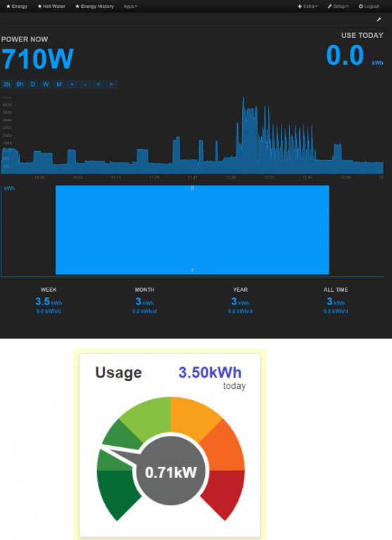
Re: EmonCMS 9.31 | 2016.02.13 released
There is some protection against large time offsets for kwh/d see if it's ok after next midnight.
Re: EmonCMS 9.31 | 2016.02.13 released
ok - will report back in 48 hours. thanks!
Re: EmonCMS 9.31 | 2016.02.13 released
Chaveiro, I now get the error;
When trying to run phpmqtt_input.php.
Also, phpmqtt.php has been updated to cure reconnection issues. The updated file phpmqtt.php file is here
Paul
Re: EmonCMS 9.31 | 2016.02.13 released
Having issues exporting to CSV from a MYSQL feed. I get this error when exporting:
If I comment out those lines (relates to max download size of CSV, which I am definitely not exceeding), then I get a 0kb CSV file.
Is this a known issue? any workaround currently? I'm running 9.0 RC, but happened on the previous release too. thanks
Re: EmonCMS 9.31 | 2016.02.13 released
@chaveiro - the My Electric app is definitely not working as expected. It has been two days and I am still seeing incorrect totals in the daily bar chart, and the 'Use Today' and weekly/monthly/yearly values.
Anything I can do to help with debugging?
Re: EmonCMS 9.31 | 2016.02.13 released
Paul and renza, i've commited fixes for that issues.
Renza, what engine type is the feed you want the csv?
summerboy: looking at that daily feed with the raw graph, do the values seem ok ?
Re: EmonCMS 9.31 | 2016.02.13 released
Yes - see attached - I recreated all my daily feeds after a suggestion by Paul, hence the small dataset. But you can see in the raw visualisation I have sensible data for the last 2-3 days, but in the My Electric app things are very different.
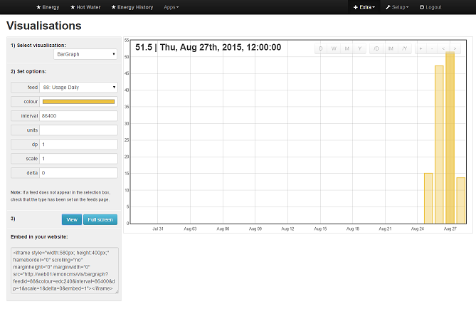
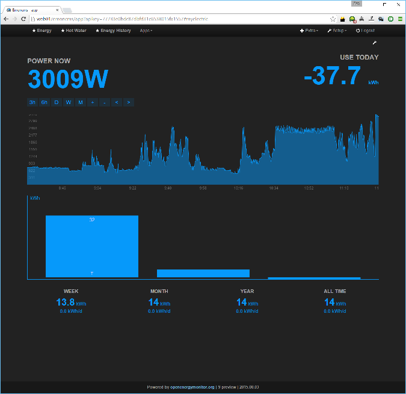
Re: EmonCMS 9.31 | 2016.02.13 released
I've just installed the app module an i get strange vales also for kwh/d feed. Something is wrong on the module.
Maybe trystan can give a hint, i may try to look at it later but this module really is not in my priorities.
Re: EmonCMS 9.31 | 2016.02.13 released
Ok - no worries Chaveiro - thanks for looking into it. I am not too worried at the moment, just glad I am not the only one seeing these issues. I wish I knew PHP so I could diagnose myself, but I can live without it for now.
BTW - thanks for all your efforts with these enhancements and updates to Emoncms - very impressive work and much appreciated!
Re: EmonCMS 9.31 | 2016.02.13 released
MYSQL is the one that returns the 0kb csv. using phpfiwa works fine and produces a csv as it should. I will try the updated release.
Re: EmonCMS 9.31 | 2016.02.13 released
Hello, apologies for my absence.
Im now running v9 on my test emonpi and its working well, I love the icon and menu changes thanks again Chaveiro.
I added the small change to the route.php file so that it supports the nodes module.
I also got the myelectric error where the power_to_kwh feed reset. I dont know the source of the reset but I rebuilt my kWh feed from an existing power feed using the script here:
https://github.com/emoncms/usefulscripts/edit/master/process/power_to_kw...
To use the script you need an existing power feed and an existing kwh feed. Here are the steps for using it. Make sure you have the latest version of the usefulscripts repo.
sudo service emoncms-nodes-service stop
sudo service feedwriter stop
sudo php power_to_kwh.php
Output should be like this:
pi@emonpi ~/usefulscripts/process $ sudo php power_to_kwh.php
Power to kWh processor feed 22 -> feed 23
Deleting data for /home/pi/data/phpfina/23.dat
Creating new data file
Recalculated in 39s
$ redis-cli "flushall"
sudo service emoncms-nodes-service start
sudo service feedwriter start
I've changed the default branch of emoncms on github to version 9 and updated the readme a little to point to this thread.
Il get the apps icon updated and move the nodes/wifi and config modules under the config dropdown menu.
Re: EmonCMS 9.31 | 2016.02.13 released
To avoid any confusion, are the changes that both Chaveiro & Trystan are making being synchronized?
Would it be helpful at this stage for you both you work from the same repository?
Chaveiro, MQTT now works fine and I am able to both publish from emoncms as well as subscribe to topics, and no errors are being reported. Brilliant!
I
just need to find a way to keep phpmqtt_input.php running. I've prepared an init script which works ok, and sent a copy to Trystan for him to consider adding to the OEM GitHub rep. Anyone want it in the meantime pls PM me.Paul
Oh yes, and the settings.php reminder message is a great addition. (both on the web ui & command line) prompting users to update it.
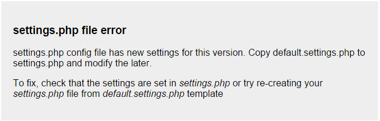
PS - spelling mistake on the message 'later' should read 'latter'.
Re: EmonCMS 9.31 | 2016.02.13 released
Well this is it, I think I'm about ready to bite the bullet and upgrade. Not without some trepidation as it took me a while to get 8.1.2 working.
With the CH and heat bank controller I've been building with an esp8266 03 I need MQTT to work. If only so I can play around with node red ;-)
On my old system I had it running from a hard disk (thanks to Paul) basically by having the same image on an SD and the hard disk and then swapping over where to boot from (if I remember the setup correctly). So can I still do this? And if so will it be obvious?
Also I'm on 866MHz to the emonTx, again is it obvious what if anything to change to get this running?
Thanks in advance for any advice.
Simon
Re: EmonCMS 9.31 | 2016.02.13 released
You don't have to reinstall your operating system to upgrade emoncms, so your root can simply remain as it is. As with most upgrades, it is probably worth creating a back up first, especially if your feed data is important to you. To upgrade, I've found the easiest way is to rename your current emoncms folder which will stop emoncms from running, then run a git clone of emoncms from your www folder. You will then have a new installation of v9 and provided that you've used the default locations for your data files it should continue to load that data. Remember to edit the default-settings.php file, set your time zone, and update your database. If you run into problems, you can always delete your new installation and rename your old folder back to emoncms. No problem using 868Mhz emontx with v9, I also use them. Any problems upgrading, probably best to start a new thread.
Re: EmonCMS 9.31 | 2016.02.13 released
Thanks Paul. I probably should have added I'm also moving to a new pi, so this will be a new install, hence the question about running from disk again.
For me the historic data isn't important, I only look at daily or weekly dashboards, so I'm not too worried losing data. I can always go back to the old pi and system if things are problematical.
So I guess I'll just follow the instructions although any help on running from disk would be useful.
Wish me luck!
Simon
Re: EmonCMS 9.31 | 2016.02.13 released
I have uploaded everything and edited the settings file to include my database settings but when i get the login page there is no option to create an account? What is the default login or what else do i need to change to allow registration and or a default login?
thanks.
Re: EmonCMS 9.31 | 2016.02.13 released
Chaviero, in addition to the post by nihonjin above, also see http://openenergymonitor.org/emon/node/11186#comment-33723 which appears to be the same issue.
Paul
Re: EmonCMS 9.31 | 2016.02.13 released
Hello,
I installed emoncms 9 ver 25.08.2015 on shared linux sever (ARUBA).
I found the following problems:
- Not created automatically and you do not create users (Annex Users.jpg).
- Error feed (Annex feed.jpg ).
- Error dasnboard (Annex dasnboard.jpg)
- Error Engine PHPFIWA with input time manually, with Engine MYSQL graph OK. (Annex error the input time manually.jpg and commands time manually.jpg)
- Error calculation power to kwh / d with input time manually is PHPFIWA Engine and Engine MYSQL (Annex error kwh-d.jpg and Annex calcolo kWh-d.csv)
Thanks for your check
Gerardo
Re: EmonCMS 9.31 | 2016.02.13 released
Hello Gerardo,
Edit: fixed.
3 - Error dasnboard (Annex dasnboard.jpg)
Did you change anything before saving? The error message means that nothing was updated. Basically saving if there is no change, bd data remains the same, so effectively nothing was updated.
Can you make a manual test and give logs, i'm expecting to see lines close to this entries:
"insert_data() feedid=? updatetime=? feedtime=? value=? arg=?"
"PHPFiwa:post id=? timestamp=? value=?"
I think it's related to error accumulated on the average accumulation calculations, something on the engine math. The numbers are close but not exact.
I can't help much here as i never dig the phpfiwa engine code, but maybe the original author could.
Re: EmonCMS 9.31 | 2016.02.13 released
Is there still an issue with the administration page?
As you can see below, I'm logged in (via remember me) and can see my personal details and API keys, yet the administration page is missing from the Setup menu.
I can get it back by logging out and back in again.
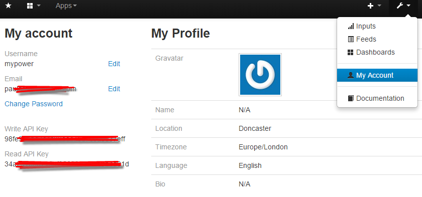
Re: EmonCMS 9.31 | 2016.02.13 released
Hi Paul, it's a 'hidden' feature from 8.4, admin type session is only available if session was authenticated directly via username and password.
Re: EmonCMS 9.31 | 2016.02.13 released
Aaah right, makes good sense.
Any update on the issue above pls - fresh installs are not able to create an new emoncms account.
Paul
Re: EmonCMS 9.31 | 2016.02.13 released
Its fixed now.
Re: EmonCMS 9.31 | 2016.02.13 released
Thanks Chaviero.
Simon
Re: EmonCMS 9.31 | 2016.02.13 released
Sorry to ask again but it seems either my question does not fit within what is being discussed or it has been missed but i would like to trial this new version hosted on a shared hosting service but after uploading it and adding my database info to the settings file I cant log in. It does not give me to option to register and or create a user login and i cannot find any default login. I have tried ot manually create a user account using phpmyadmin but it does not recognize the password when i do. Any help would be greatly appreciated.
Thanks.
Re: EmonCMS 9.31 | 2016.02.13 released
hello nihonjin, try to load the new verisone (EmonCMS 9.0 RC | 31.08.2015) that are here https://github.com/chaveiro/emoncms/archive/9.0.zip
Chaveiro has now fixed the 'registration' issue
gerardo
Re: EmonCMS 9.31 | 2016.02.13 released
Thanks Gerardo that new update has fixed the register link but unfortunately it still does not allow you to login. I brings up the register option and you enter all the details and then click on register. nothing actually happens at this point but it does in fact at least create a user account in the DB. However when you try to login with the newly created username and password it give the error: Incorrect password, if your sure its correct try clearing your browser cache.
So unfortunately no luck. How have others been able to login and test? I have been using emoncms.org until now so don't have any previous DB or account to update from to this one and so need to start from scratch. Thanks for any further help.
Re: EmonCMS 9.31 | 2016.02.13 released
hello nihonjin , my procedure was this:
-I installed the Master version (v8.4) https://github.com/emoncms/emoncms/tree/master, once created user and apikey, they create tables in mysql, I exported the table of the user and saved in .csv table I deleted all the tables created in the mysql database.
- Then I copied version (v9), here precisely nn can create user, then go in to the mysql user entry and manually enter the data exported before, note that the password is not what you put it but so many letters that correspond to the your password entered previously.
I got it?
Gerardo
Re: EmonCMS 9.31 | 2016.02.13 released
Hello Chaveiro,
I did not understand what I need to do to solve:
4 - Error Engine PHPFIWA with input time manually, with Engine MYSQL graph OK. (Annex error the input time manually.jpg and commands time manually.jpg)
Can you make a manual test and give logs, i'm expecting to see lines close to this entries:
"insert_data() feedid=? updatetime=? feedtime=? value=? arg=?"
"PHPFiwa:post id=? timestamp=? value=?"
5 - Error calculation power to kwh / d with input time manually is PHPFIWA Engine and Engine MYSQL (Annex error kwh-d.jpg and Annex calcolo kWh-d.csv)
we can not create something new in PHP with external links from scratch to overcome these problems?
Re: EmonCMS 9.31 | 2016.02.13 released
Hi
Excited about the new developments in RC9, so had to consume my wet bank holiday weekend experimenting on a new EmonCMS setup with this latest and greatest version. My "legacy" is 8.3.6 running on a Pi with data stored locally.
My new setup is on an instance on my Synology NAS, using a Debian Docker container. The install went very well.
I have one issue: I have a small perl app that runs on the Pi grabbing Gas, Electricity and Temperature values from my CurrentCost monitor via the RS232/USB connector. The grabbed data is pushed to EmonCMS via the POST.JOSN API. On 8.3.6 the feeds register perfectly. On RC9 a new feed is created for every received value - so every 10 seconds or so I get a new "Gas" feed with the latest reading.
Anyone else using POST.JSON feature on RC9 with no issue? Has the {feed:value} format changed in RC9?
I'll break post regulations/etiquette and ask a second unrelated question to RC9... (sorry!):
Would be excellent to know if anyone has merged historical data from old instance of PHPTIMESERIES, PHPFINA and PHPFIWA to a new instance - please PM me with any pointers on this.
Thanks all and keep on innovating - some excellent work going on here!
Mike
Re: EmonCMS 9.31 | 2016.02.13 released
I fixed this. I needed to add &node=xx to the API call. Basically something like this:
/input/post.json?json={1:18}&apikey=YOURAPIKEY&node=21
Still would like to hear of any techniques to merge timeseries (PHPTIMESERIES, PHPFINA and PHPFIWA) data stores together.
Thanks
Mike
Re: EmonCMS 9.31 | 2016.02.13 released
4 - Error Engine PHPFIWA with input time manually, with Engine MYSQL graph OK. (Annex error the input time manually.jpg and commands time manually.jpg)
"PHPFiwa:post id=? timestamp=? value=?"
You have a log file emoncms.log on the base path of emoncms installation that will output lines like the ones i quote.
Look at the log the moment you manually input to a phpfiwa feed with a set time and post here the logs that are close to the ones i gave you, search for the bold text.
Re: EmonCMS 9.31 | 2016.02.13 released
Chaveiro:
As you can see from the attached there is no file in the folder called emoncms.log
Should I put the new version?
Re: EmonCMS 9.31 | 2016.02.13 released
Go to menu setup/administration see what it says on Logger section.
Re: EmonCMS 9.31 | 2016.02.13 released
Hello Chaveiro,
I do not see the page Logger section (attach picture).
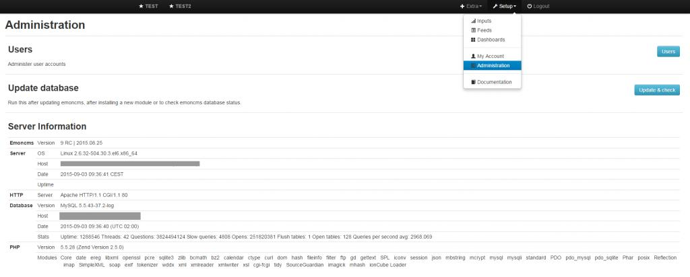
Re: EmonCMS 9.31 | 2016.02.13 released
@Gerardo: are you sure you are running the latest version? I see in your screenshot that you are running the 2015.08.25 build and not the 2015.09.03 build
Re: EmonCMS 9.31 | 2016.02.13 released
Gerardo, maybe you disabled it on your config file, check this config lines:
//6 #### Other settings
// Log file configuration
$log_enabled = true;
$log_filename = dirname(__FILE__).'/' . 'emoncms.log';
Re: EmonCMS 9.31 | 2016.02.13 released
Hello Chaveiro,
He was right it was not enabled in setting.Dalle 11:31 hours to 11:34 hours I manually entered data. See if you can find what you say.
I attach both the .log file that the configuration of the feed
Thank you
Re: EmonCMS 9.31 | 2016.02.13 released
Gerardo i dont see nothing wrong with the logs. The feed engine receives the data. So if data is not shown it's something on the PHPFIWA engine code itself but it is not giving any error also.
This engine code was not reviewed and don't support low-write mode, even on v9.
It is the same code as of 8.4 and there could be some bug in it.
I wonder how good is this engine anyway since it always rounds up average values.
Personally i would not support it, is it a popular engine? Why? Space savings?
Re: EmonCMS 9.31 | 2016.02.13 released
Chaveiro,
Feedback on v9 dated 2015.09.05
Unzipped and Installed.
Copied default.settigs.php to settings.php, made the necessary edits.
My feeds stopped updating, and selecting the inputs page results in a blank screen.
Tnx and have a good 1!
Bill
Re: EmonCMS 9.31 | 2016.02.13 released
I am running V9 RC 2015.09.03 with latest updates. Everything is fine, except MyElectric, as others have reported. Thanks for a great new version with MQTT and many other features!
Bill - make sure you have the version merged with pull request 383. There was a problem with UTF-8 on the inputs before that, if you have underscores on input names. It was preventing my inputs from getting through. Now everything is fine.
Re: EmonCMS 9.31 | 2016.02.13 released
Thanks Tom.
What's the syntax to do the merge you mentioned?
Bill
Re: EmonCMS 9.31 | 2016.02.13 released
Just installed v 9.0 RC | 2015.09.05 on two Raspberry Pi's, and both work fine, feeds updating and no blank pages.
However for some time now I've been using the code below in a dashboard, to retrieve the feed value, but just noticed that it's no longer updating.
The actual feedname is "Outdoor Temp" and wondered if the changes which were made to the feeds during - was it v8.6? where we had to re-establish the dashboard links, have made "Outdoor-Temp" the wrong format for the feedname.
I can't say when they actually stopped updating, but worked fine pre v8.6
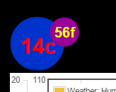
Re: EmonCMS 9.31 | 2016.02.13 released
Removed dependency on dashboard widgets (3rd button on editor) of feed names, use feed id instead. Will break existing user dashboards. Need to edit dashboard and choose feeds again.
I had to do that (re-estab the links) for the 09.03 update. After re-selecting the feeds for the feed value widgets, everything worked OK again. But I knew that going into the update. Didn't have to do it for any of the graphs.
Re: EmonCMS 9.31 | 2016.02.13 released
Bill, my widgets are working fine - just the html snippet no longer retrieves the feed value.
Paul
Re: EmonCMS 9.31 | 2016.02.13 released
Hi Paul, is this a custom html block of your authori? If not config should work.
Feedname is no longer supported, use feedid instead as highlighted in bold.
This allow to have different feeds with the same name. For different nodes for example.
Re: EmonCMS 9.31 | 2016.02.13 released
Yes it's a feed block that I wrote, and feedid="1" retrieves the value OK & works fine, I'll update my other snippets too.
Paul
Re: EmonCMS 9.31 | 2016.02.13 released
Hi Bill,
Assuming you installed emoncms via git clone, you call pull-in updates as follows:
$ cd /var/www/emoncms
$ git pull
Regards,
Tom
Re: EmonCMS 9.31 | 2016.02.13 released
Hi Gerardo I followed your procedure and now have it installed and working. Thanks for your help. This updated version has fixed the incorrect daily time issues where emoncms does not reset daily logs correctly. Thanks.
Re: EmonCMS 9.31 | 2016.02.13 released
Never mind worked it out.
Re: EmonCMS 9.31 | 2016.02.13 released
Hi Bill,
Assuming you installed emoncms via git clone, you call pull-in updates as follows:
$ cd /var/www/emoncms
$ git pull
Regards,
Tom
Hi Tom,
I did a git pull, but that gives me v09.03
The version that gives me the blank screen and no feeds is 09.05, manually downloaded, unzipped, and installed from Chaveiro's github archive. https://github.com/chaveiro/emoncms/archive/9.0.zip
Thanks,
Bill
Re: EmonCMS 9.31 | 2016.02.13 released
Is v9 an upgrade to the low-write version and meant only for people running on sd cards or is it an upgrade-for-all?
Thanks,
Kev
Re: EmonCMS 9.31 | 2016.02.13 released
Hi Kev. v9 is now the default version for installation, and anyone making a fresh installation via git would automatically get v9. It's also an upgrade for existing users.
In it's default installed state it is in read/write mode (same as v8.5), but there are changeable settings in the settings.php file to run in the Redis Low-Write mode using Feedwriter if that's what you'd prefer.
And no it's not limited to SD card users.
Paul
Re: EmonCMS 9.31 | 2016.02.13 released
Chaveiro, just taking a look at low-write options, I've found the message in 'Server Information' - Daemon is not running, start it at ~/scripts/feedwriter
But ~/scripts/feedwriter appears to be an initialization file - does it need copying to /init.d and then $ update-rc.d to keep it running.
Looking at the ~/scripts/feedwriter file, it makes reference to RPI_BIN="/var/www/emoncms/run/feedwriter.php" which location does not exist in v9, should it be RPI_BIN="/var/www/emoncms/scripts/feedwriter.php"
Starting feedwriter.php via ssh results in feedwriter running, but I keep getting this error in the log;
Paul
Re: EmonCMS 9.31 | 2016.02.13 released
Hi Paul,
Yes that feedwriter script should have that path reviewed and copied to : /etc/init.d
Or even better, create a symbolic link there pointing to emoncms path so if script is updated on git it is used without need to copy again:
cd /etc/init.d
ln -s /var/www/emoncms/scripts/feedwriter feedwriter
Then you can setup it one time with :
sudo update-rc.d
And can start/stop it manualy with:
sudo service feedwriter start
sudo service feedwriter stop
The warning means exactly that, or data is being posted too fast for the phpfina interval and some values are ignored, or feed has already some data past that timestamp. Try to start with a new feed just for test.
Additional comments on the error:
// if data is in past, its not supported, could call update here to fix on file before continuing
// but really this should not happen for past data has process_feed_buffer uses update for that.
// so this must be data posted in less time of the feed interval and can be ignored
Check that the feed is indeed having data for that timestamp range.
I'm not using low-write mode, trystan was reviewing that part, i'm not sure if he had any issues with it but let me know any you might have.
You may install PHPRedisAdmin, it will help to see the redis cached data so you can better help me understand any issues: https://github.com/ErikDubbelboer/phpRedisAdmin
Re: EmonCMS 9.31 | 2016.02.13 released
I'm not using low-write either, just trying to beta test v9 functionality, and highlight issues which end-users would encounter.
I can provide logs, but analyzing and interpreting the timestamp data is probably for someone more technically proficient than me!
Trystan??
Re: EmonCMS 9.31 | 2016.02.13 released
Thanks for the log. It seems ok to me, but let me explain by example what is happening.
Removed dates from log to fit here.
Your feed phpfina interval is 10s right?
At some point you posted this 8 data points spaced 10secs but the bold one that were less (4-6secs appart):
INFO|feed_model.php|insert_data():
feedid=2 updatetime=1441570007 feedtime=1441570007 value=421 arg=
feedid=2 updatetime=1441570017 feedtime=1441570017 value=420 arg=
feedid=2 updatetime=1441570022 feedtime=1441570022 value=423 arg=
feedid=2 updatetime=1441570027 feedtime=1441570027 value=433 arg=
feedid=2 updatetime=1441570032 feedtime=1441570032 value=429 arg=
feedid=2 updatetime=1441570052 feedtime=1441570052 value=429 arg=
feedid=2 updatetime=1441570056 feedtime=1441570056 value=427 arg=
feedid=2 updatetime=1441570062 feedtime=1441570062 value=421 arg=
This values got cached.
Then when it was time to write to feed, there is only one feed slot spaced 10s that can get a value.
Log is this:
|INFO|RedisBuffer.php|process_buffer() engine=5 feed=2 len=8 <--- 8 points to save
feedid=2 timestamp=1441570007 value=421 <-- Save 1st data point
pos=48 last_pos=47 timestampinterval=1441570000 <--- This is the feed slot, saved ok to slot 48 of phpfina
feedid=2 timestamp=1441570017 value=420 <-- Save 2nd data point
pos=49 last_pos=48 timestampinterval=1441570010 <--- This is the feed slot
feedid=2 timestamp=1441570022 value=423
pos=50 last_pos=49 timestampinterval=1441570020 <--- This is the feed slot
feedid=2 timestamp=1441570027 value=433
pos=50 last_pos=50 timestampinterval=1441570020 <--- Same slot because post time was less than 10s give error on next line
data in past or before next interval, nothing saved. Posting to fast? slot=10 feedid=2 timestamp=1441570020 pos=50 last_pos=50 value=433
feedid=2 timestamp=1441570032 value=429
pos=51 last_pos=50 timestampinterval=1441570030
feedid=2 timestamp=1441570052 value=429
pos=53 last_pos=51 timestampinterval=1441570050
feedid=2 timestamp=1441570056 value=427
pos=53 last_pos=53 timestampinterval=1441570050 <--- Same slot because post time was less than 10s give error on next line
data in past or before next interval, nothing saved. Posting to fast? slot=10 feedid=2 timestamp=1441570050 pos=53 last_pos=53 value=427
feedid=2 timestamp=1441570062 value=421
pos=54 last_pos=53 timestampinterval=1441570060
Re: EmonCMS 9.31 | 2016.02.13 released
Bill Thomson, i was able to get your issue, it was something with the utf8 change, not saving the timezone if you updated it on user pannel.
Fixed now.
Re: EmonCMS 9.31 | 2016.02.13 released
Bill Thomson, i was able to get your issue, it was something with the utf8 change, not saving the timezone if you updated it on user panel.
I didn't change the time zone, but 09.07 is working like a champ.
Thanks C!
Re: EmonCMS 9.31 | 2016.02.13 released
Are there going to be a set of upgrade instructions for people running the EMONPi Image?
I'm keen to see what's new but the link at the top of the page doesn't seem to work and "git pull" even after git checkout 9.0 tells me my pi is already up to date.
Re: EmonCMS 9.31 | 2016.02.13 released
Hello nihonjin, thank you Chaveiro for the work you are doing. They are available for info for shared hosting.
Thank you
Re: EmonCMS 9.31 | 2016.02.13 released
Hello Chaveiro , I think you have to change this engine PHPFIWA, as with the values entered manually is not working. What do you think about it? others what they think?
greetings and thanks for your time
Re: EmonCMS 9.31 | 2016.02.13 released
After copying files to ... not empty database i got this:
Fatal error: Call to a member function fetch_row() on a non-object in ////emoncms/Modules/user/user_model.php on line 581
Re: EmonCMS 9.31 | 2016.02.13 released
softm, you may have installation errors or different version of php, mysql php module or other mix of older server modules.
I have none of the problems you reported, and other users have already installed from scratch without them either.
If you find a solution, please fix. Seems the same as http://openenergymonitor.org/emon/node/11214
This is what i have for reference:
Database Version MySQL 5.1.56-log
PHP Version 5.6.10 (Zend Version 2.6.0)
PHP Modules Core date ereg libxml pcre sqlite3 filter mbstring SPL PDO Reflection pdo_sqlite hash session cgi-fcgi bcmath bz2 calendar ctype curl dom standard ftp gd gettext exif iconv imap json mcrypt mysqlnd mysqli openssl pcntl pdo_mysql posix pspell mysql SimpleXML soap sockets tokenizer xml xmlreader xmlrpc xmlwriter xsl zip zlib imagick mhash
Re: EmonCMS 9.31 | 2016.02.13 released
There must be empty database before running this.
Re: EmonCMS 9.31 | 2016.02.13 released
Hello chaveiro,
we find a solution for the data entered manually?
thank you
Re: EmonCMS 9.31 | 2016.02.13 released
A. ok,i run this with "old" php 5.1.36. There is new syntax - which can not be used. Author likes arrays [x] after functions calls. And this makes problems, while php understood this only last few years :) So i redo this in function call arrn(array,number). DB creation is not correct. There must be prefixes, but i understood that was complex add this in every place, so there are not... ok, i also redo this for myself.
B. Sorry more questions from this side:
Can anybody let me know ... an using this to store data:
*/emoncms/input/post.json?time=1441636500&node=1&json={power:0002.003}&apikey=12322323223233
Its runs ok
1. But where it store this data?
2. I saw few entries in input tables. Unique for each param name as i understood.
3. But i got this 1/hr - and cant understood where it collects data?
3. Or it not collects until i configure something?
Is there faq or description of file/db structure & how this all works?
, Arsen
Re: EmonCMS 9.31 | 2016.02.13 released
All looking good with EmonCMS 9.0 RC2 | 2015.09.09
Paul
Re: EmonCMS 9.31 | 2016.02.13 released
What would I need to do to install this RC on a second RPi2 I have?
It is running Raspbian. I don't want to run this on my production RPi yet.
Re: EmonCMS 9.31 | 2016.02.13 released
Follow the installation guide?
Paul
Re: EmonCMS 9.31 | 2016.02.13 released
Hi
Getting ready to try this. I noticed that mqtt only has the server address in settings.php $mqtt_server = "192.168.1.??"; but not the port number which was in the old process_model.php phpMQTT("192.168.1.??", 1883, "Emoncms input subscriber");. Does this matter? I rely on mqtt for some of my data.
Regards
Ian
Re: EmonCMS 9.31 | 2016.02.13 released
Port 1883 works fine with EmonCMS 9.0 RC2 | 2015.09.09.
The topic is hardcoded - rx/'feed number' ie rx/10
Paul
Re: EmonCMS 9.31 | 2016.02.13 released
I tried this overnight, and couldn't get it to work. Emonhub.log showed the MQTT packets passing but EMONCMS didn't read any of them from both my RFM connected Pi and my Ethernet connected MQTT. Openhab which sits on my Pi could read them as usual so EMONCMS didn't read MQTT on my system. Thankfully I had an image backup which is now working. Also uncommenting ",Engine::PHPFIWA // 6" also stopped it from starting at all.
Its a pity as the new version looks pretty good.and all my old data and feeds were there albeit not updating any more.
In case anyone interested I'm currently running the EMONPI Image on an EMONBASE and I tried installing 2 ways,
1) By downloading it from the link at the top and renaming /var/www/emoncms to emoncms.old and copying in the software from the link at the top of the page, I then added nodes, and app before sorting feedwriter which is mentioned further up the thread. Before creating a new settings.php
2)By changing branches and git pull of EMONCMS, Nodes and App
I also started emoncms-nodes-service and feedwriter. I restored the whole SD Card between attempts.
I suspect I'm missing an obscure hoop or 2 that needs creating and remodelling before jumping through...
Re: EmonCMS 9.31 | 2016.02.13 released
MQTT 'publish' works fine out of the box in v9 provided MQTT is activated in the settings.php file.
However, to subscribe, you need to run the /var/www/emoncms/scripts/phpmqtt_input.php either by opening a SSH session and running the script from there (it will stop running when you close the session) or use a initialization file (init) to keep it running (and restart after reboot). I've prepared one here if want to try it, I've put some installation notes in the readme.
MQTT works fine on v9, I have it running smoothly on 2 Pi's.
Paul
Re: EmonCMS 9.31 | 2016.02.13 released
Thanks for the script, might give it a try if I have some time tomorrow. Can I only backup the emoncms directory to ensure a successful restore? Imaging a 32gig card and restoring takes ages!
is it best to try option 1 or option 2 that I did earlier?
Re: EmonCMS 9.31 | 2016.02.13 released
Does emoncms-nodes-service need to be running as well as the feed writer service for it to talk to things defined
in the nodes app?
Re: EmonCMS 9.31 | 2016.02.13 released
sheppy,
and that should be it - v9 installed.
To get MQTT subscribe working - presumably you have Mosquitto installed, install the init script as above and reboot.
If you then want to revert back, delete your emoncms folder and rename your original folder back to emoncms.
Paul
Re: EmonCMS 9.31 | 2016.02.13 released
Thanks Paul,
the first time I did that it told me feed writer wasn't running and going to emoncms/scripts didn't allow
me to start it so I discovered something further up the thread about moving it to init.d where I had one from the old install which I deleted, does this still need doing?
Re: EmonCMS 9.31 | 2016.02.13 released
For a default installation feedwriter is not needed. Get the defaults working first and then switch to low-write later, if you want to - which does use feedwriter.
Paul
Re: EmonCMS 9.31 | 2016.02.13 released
OK, I just did all that and still my nodes are inactive, as are my 4 inputs, and now my feeds sit at a white screen with "loading." this may be because the old feeds were in /home/pi/data and I haven't edited settings.php this time to reflect that. (EDIT I just changed settings.php and they have returned albeit not updating)
I have installed your script.
A reboot didn't change anything.
I have in emonhub.log the MQTT packets from the RFM, but EMONCMS Log from the web browser is empty, probably because its pointing to /var/log/emoncms.log whereas settings.php is pointing to /var/www/emoncms/emoncms.log which contains:
2015-09-10 10:23:25.773|INFO|phpmqtt_input.php|Starting MQTT Input script
Suggestions?
Re: EmonCMS 9.31 | 2016.02.13 released
After much messing about I've still getting no updates from EMONHUB into EMONCMS, changing back to the previous version works without doing anything other than a reboot. The script you let me have is running according to PS, and updates appear in EMONHUB.log but nothing in EMONCMS,log apart from a message to stay the MQTT Input script has started. The MQTT messages are being published on the broker as I can see them in Openhab so for some reason EMONCMS isn't seeing the MQTT messages.
Re: EmonCMS 9.31 | 2016.02.13 released
Sheppy, as you have updated from the emonpi version, do you have the standard emonhub version installed, or the altered Emonhub version as amended by Trystan for the emonpi, as the two are very different, and the amended emonpi-emonhub probably won't work with emoncms.
i.e. how did you install emonhub, or are you using a downloaded system image?
If you have installed the emonpi version, you will need to remove it first, then follow the section within the install guide to install the correct version.
Paul
Re: EmonCMS 9.31 | 2016.02.13 released
Hi Paul,
Yes I do have the Emonhub version fromthe emonpi, which I'm loath to ditch as it blocks my way back if I can't get it to work. It also uses MQTT which I use to get the power data into Openhab. Can this be made to work without ditching it? I also use MQTT inputs via this route.
Re: EmonCMS 9.31 | 2016.02.13 released
I verified MQTT publish to emoncms inputs works: emonhub is not required.
/var/www/emoncms/scripts/phpmqtt_input.php needs to be running and can be invoked using Paul's script mentioned above.
To publish to emoncms inputs:
Make sure MQTT is enabled with proper server IP in settings.php
Make sure userid number matches your id in file /var/www/emoncms/scripts/phpmqtt_input.php
also, basetopic is set there to rx
Subscribe to rx/#
Set topic to: rx/node/key
Set message to your data
If the key is not given, it defaults to "0"
Best Regards,
Tom
Re: EmonCMS 9.31 | 2016.02.13 released
Thanks for the reply Tom, this has now moved to its own thread http://openenergymonitor.org/emon/node/11234
where I have continued the discussion
Re: EmonCMS 9.31 | 2016.02.13 released
Updated to 9 RC2 | 2015.09.15 today. Looks good.
One thing I noticed as of the 09.09 version (didn't check any of the versions prior to 2015.09.09) and in the 09.15 version as well, is a difference in my dashboard when I set it up on a notebook computer with a screen resolution of 1366 x 768 then view it on a desktop computer set at 1680 x 1050. The realtime graphs overlap and the spacing between the simplezoom bargraphs changes significantly. All of the items on the dashboard are set to "percentage" height and width.
Notebook runs Win 7. Desktop runs XP. Browser is Firefox 40.0.3 on both machines. Behaves the same with Chrome 45.0.2454.85 m.
Has anyone else noticed anything similar?
Screenshots attached.
Re: EmonCMS 9.31 | 2016.02.13 released
Hi bill it's supposed to do that, setting width to percentage means when you resize the windows width, the graph also resizes. You should put one graph per line.
Re: EmonCMS 9.31 | 2016.02.13 released
Hi Chaveiro,
So the individual graphs don't get resized? Just the entire dashboard?
What seems odd is I set it up at a lower resolution that I'm viewing it at. Should it be doing anything to the dashboard in that case? I can understand setting it up at a high screen res, then resizing when viewed at a lower screen res. Is that not the way your percentage function works? Why would it need to change the dashboard if I'm viewing at a resolution higher than the res I set up at?
Thanks
Re: EmonCMS 9.31 | 2016.02.13 released
Tried EmonCMS 9.0 RC2 | 2015.09.15 this morning, and which as the change log has said has removed the reliance on feed names.
Previously, if feed names/Tags were later changed, it would break existing input processes, whereas it now works fine.
The 'dewpoint' widget works ok too, and is a welcome addition.
Any thoughts on changing/removing the 'snap to grid' dashboard restriction to allow greater precision/freedom in laying out dashboards?
Paul
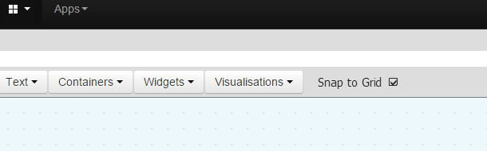
Re: EmonCMS 9.31 | 2016.02.13 released
Has anyone had any luck reconstructing their kwh feeds using the power_to_kwh.php script? I followed the instructions posted earlier in this thread to try and recalculate my feeds since the upgrade to 9.0 reset them to zero, but nothing seems to happen.
My source feeds are phpfiwa and I've edited the script appropriately, but the only output I get is:
Power to kWh processor feed 1 -> feed 2
Recalculated in 3s.
If I watch the log while i invoke the script I get a bunch of PHPFina.php|PHPFina warnings that the "post timestamp older than feed start time id=2"
Anyone have any ideas? Thanks!
Re: EmonCMS 9.31 | 2016.02.13 released
Just git cloned the 'App' modules into v9.0 RC2 | 2015.09.15 and found that the 'spanner' (configuration) icon in 'My Electric' cannot be selected, so the app cannot be configured.
The same 'spanner' configuration icon in 'My Solar' works fine.
When clicked, the Developer console displays;
Anyone getting the same? Bill?
Paul
EDIT 16/9 - Also the 'remember me' function is still not remembering logins (only sometimes!).
Re: EmonCMS 9.31 | 2016.02.13 released
Hi Paul,
I get the same error msg, and the same spanner icon behavior.
EDIT 16/9 - Also the 'remember me' function is still not remembering logins (only sometimes!).
I noticed that too.
Bill
Re: EmonCMS 9.31 | 2016.02.13 released
Hi,
Was the app module updated recently? My Electric is working here, i have it since beginning of august.
Re: EmonCMS 9.31 | 2016.02.13 released
Yes it was updated Aug 28th.
If I git checkout the app module SHA 99ac28ce58bcccdaabe13862bba200f4d8c1f8f4 which was pre Aug 28th, I can access the config menu & 'My Electric works fine.
If I roll forward to SHA 41806edc4b3b42b86c237090a9c719127aac70a8 - that's when the config menu becomes inaccessible.
Someone else has also opened this as an issue (also using v9), I've also raised a separate post to make others aware.
Paul
Re: EmonCMS 9.31 | 2016.02.13 released
I created a new Apache2 virtual host, cloned the v9 branch into a new folder called "emoncms9"
New MySQL database "emoncms9"
New user to new MySQL database "emoncms9"
Activated MQTT = working (checked in Node-Red)
Raised node limit to 256 (MQTT nodes are starting from 100 in my case)
All is working, except I copy pasted the node description/names and so my feed names are the same. After clicking refresh I suddenly see feeds from 7MB in a new DB with only 10minutes of logging.
I re-login in my 'old' v8.4 to check the feed size, exactly the same. I check a multigraph to see if I can see historical data older then 10min. I can... So when a user makes a feed with exactly the same name it is posting to the same file??? Isn't this a huge problem for/on emoncms.org?
See screencaps.
Re: EmonCMS 9.31 | 2016.02.13 released
I have some weird problem with V9 emoncms. I running it in my linux server and it's work fine when i access it to my laptops but when i use my RPi with any browser the it not render any widgets. I can select them in edit mode but nothing except selection box come visible. In V7 it's works fine.
I also try VNC and x11vnc to transfer display to my laptop but result is still a same.
Anyone have idea what could be a reason?
Is there any open V9 dashboard available somewhere so i could test does it work there?
Re: EmonCMS 9.31 | 2016.02.13 released
Fluppie, probably something that you have already considered... but have you changed your database details to 'emoncms9' in your settings.php file of your new install? ie are they both sharing the same data?
Paul
Re: EmonCMS 9.31 | 2016.02.13 released
Jup, I think it's because of this setting:
// Engines working folder. Default is /var/lib/phpfiwa,phpfina,phptimeseries
// On windows or shared hosting you will likely need to specify a different data directory--
// Make sure that emoncms has write permission's to the datadirectory folders
'phpfiwa'=>array(
'datadir' => '/var/lib/phpfiwa/'
),
'phpfina'=>array(
'datadir' => '/var/lib/phpfina/'
),
'phptimeseries'=>array(
'datadir' => '/var/lib/phptimeseries/'
It's not because of the name, it is because of duplicate feed id's. This cannot happen on servers with only one emonCMS installation. I need to change the foldernames.
Re: EmonCMS 9.31 | 2016.02.13 released
'phpfiwa'=>array(
'datadir' => '/var/lib/phpfiwa/'
),
'phpfina'=>array(
'datadir' => '/var/lib/phpfina/'
),
'phptimeseries'=>array(
'datadir' => '/var/lib/phptimeseries/'
)
);
Re: EmonCMS 9.31 | 2016.02.13 released
There appears to be problems with the 'Power to kWh/d' process.
Although the data increments OK when looking at the 'Power to kWh/d' feeds in the feeds list page, when I view the data on the bar graph - it's blank.
It's not something I regularly check, so can't say when this occurred, but problems with this 'process' have been raised in the forum going back over 12 months, so it may be an old issue?
The feeds are phptimeseries.
Paul
Re: EmonCMS 9.31 | 2016.02.13 released
Hello,
Thanks for this new release !
I think I found a bug : kWh to KWh/d doesn't work. Or I don't know how to use it! I have the value of an electrical counter that gives me the number of KWh since it's been running and I'd like to know the number of kwh used each day. How do I use it please?
Thanks,
Jean-Paul
Re: EmonCMS 9.31 | 2016.02.13 released
Sorry to be so dim but how do I use this update?
Re: EmonCMS 9.31 | 2016.02.13 released
I have tried 9 RC2 | 2015.09.15 on my NAS for the past few weeks and it works perfectly. Today I decided to move it to my (shared) webhosting environment. Unfortunately only the first feed gets updated and all the others remain offline. When I look at the inputs there is data coming in.
What can be the problem here?
Re: EmonCMS 9.31 | 2016.02.13 released
Have you checked your emoncms log, and also the emonhub log for details of any errors?
Re: EmonCMS 9.31 | 2016.02.13 released
The log files do not show any errors as far as I can see. See a snapshot below
Re: EmonCMS 9.31 | 2016.02.13 released
Stupid me :-( After setting the timezone correctly in my account all feeds started working again. The timezone was (due to migration) set at "2" after setting it to Europe/Amsterdam all feeds went live :-)
Re: EmonCMS 9.31 | 2016.02.13 released
Good. The timezone is easily overlooked, and it might be worthwhile me adding a line in the installation guide to remind people.
Paul
Re: EmonCMS 9.31 | 2016.02.13 released
Maybe I jumped the conclusion: feeds are live, but older data does not appear in the graphs. The data was copied 1-1 from my 8.4 installation and data from the last three weeks does appear in a correct way.
Any ideas on what is wrong? No info in the logs...
Re: EmonCMS 9.31 | 2016.02.13 released
Hello, first of all sorry for my lack of engagement with version 9 over the last couple of months, with being away and a couple of other things I found it a challenge to get time to help as I would have liked. But I am very keen now to help complete the transition to v9. I have created a preliminary SD card image with v9 on it, which is now online here:
http://openenergymonitor.org/files/emonSD_7oct15_v9.img.zip
I've updated the menus for the config, nodes, app and wifi modules so that they fit in with the new v9 menu system. These are all available under the 9.0 branches of the respective repositories.
Id be very grateful for any help with testing the image and suggestions for what else should be on there. I've added the wifi hotspot requirements as documented here http://openenergymonitor.blogspot.fr/2015/09/how-to-setup-wifi-hotspot-o...
but it does not yet serve a hotspot without a final configuration of /etc/network/interfaces and /etc/rc.local. It like to get it to serve a hotspot for initial configuration but haven't quite managed to get that to work, If anyone with more linux networking experience could help, I started a thread here describing how far I got: http://openenergymonitor.org/emon/node/11339.
Thanks again Chaveiro for your work on this and Paul for your recent documentation update.
Trystan
Re: EmonCMS 9.31 | 2016.02.13 released
@Trystan - FYI - I am still seeing problems down here in NZ (on NZ timezone) with the My Electric app. When I look at the app before midday local time, I see a *Use Today* total which is the sum of yesterdays total + usage so far today. Once I hit midday (actually might be 1pm now we have moved to DST) this total starts showing the correct *today only* value.
Also, unrelated, the *Remember me* option on the login page only seems to remember for 1 day (guestimate). Every morning when I open up Emoncms I have to login again. Is this by design? Used to *remember* a lot longer ;).
Running v9 RC2 | 2015.09.15.
Agree with @Trystan tho, thanks a million to @Chaveiro for all your fantastic work taking Emoncms forward!
Re: EmonCMS 9.31 | 2016.02.13 released
I'm seeing exactly the same issue in Sydney, just different local time. My Today readings are combined with my Yesterday's reading until UTC date catches up with date in my timezone. Before moving to DST, it was 10am local time.
Also, when I change the scale of the top graph to week, month or longer, the labels on the x-axis continue to show time. I'd expect them to change to dates once the scale is over certain threshold.
Re: EmonCMS 9.31 | 2016.02.13 released
i'm having a weird issue on windows.
I was running version 8.5.2 before in a folder called emoncms on my www root i did the upgrade process by moving this folder to emoncmsold and copying the files from version 9 rc2 to emoncmsnew i copied the settings file from the defuaults and named it settings.php changed al settings that needed to be changed added the setting for the database update and went to the administration view to be able to update the database, everything worked without a problem. I then removed the setting for the database update and logged in and everything was working except for a few widgets that didn't show, i had read here somewhere that i needed to select the feeds again so i did and indeed they were showing again. After doing all these modifications i renamed the emoncmsnew folder to emoncms, cleared my (ie) browser histrory and logged in.
Now the problems:
1) emon dashboards uses iframes for certain visualizers and saved the url with emoncmsnew in it but a far bigger problem was that i could not get into edit mode anymore it stayed in view mode and i only had the configure and delete buttons showing, i also was not able to add a new view nothing seemed to work. so i cleared my history once more to be sure but it did not work. If i renamed my folder back to emoncmsnew it worked again.
I even tried renaming the folder to some other name like emoncmsnew2 and the editor still worked i then renamed back to emoncms and it did not work. I can make screenshots or a youtube video of the problem if it's needed. I also tried editing the html for the dashboards in phpmyadmin to change the iframes pointing to emoncmsnew back to emoncms but this did not solve the problem either.
So i just renamed my folder back to emoncmsnew and all my dashboards worked again.
Does emoncms save the folder, url somewhere from where it is installed / working ? i checked the db and even did a grep on emoncmsnew but it came up without any results.
any idea's as to why i can't use the emoncms folder anymore ?
also another problem i'm having since emoncms 8.5.2 is that the zoom visualization (with the costs) does not seem to work anymore, it just displays one big blue rectangle and displays the wrong day. I had timezone issues before but the update to 8.5.2 fixed this but the zoom display got messed by installed that update, readding the vizualization does not seem to make a diffrence
Re: EmonCMS 9.31 | 2016.02.13 released
@joyrider3774 I suggest you recreate your dashboards. I had the same problem and discovered that my new installation was actually showing the old dashboards through an Iframe. If you go into your new database with phpmyadmin and look at the dashboard table you will most probably see your old URL popping up. By recreating your dashboards you will overcome this problem.
Re: EmonCMS 9.31 | 2016.02.13 released
Thanks to Paul Reed I managed to convert the current phptimeseries feed and indeed: the last value that contains any data is dated Wed, 23 Sep 2015 15:58:31 GMT. All data prior to that has got timestamp 0 and value 0, so it appears that the actual data has been corrupted. All data that is in my 'old' installation (of which I duplicated the feed data before testing Emoncms9) has got data prior to this.
Any clues?
Re: EmonCMS 9.31 | 2016.02.13 released
do the apps work ? i downloaded the apps for version 9 branch from github but all i get is an empty white page. Could this be due to me deleting the my electric table ? in my efforts to get it working i accidently deleted this table and can't seem to get it back with update database. I'm guessing this table is only created when you press the save button in the configuration. I already cleared browser cache in both ie and internet explorer. I'm getting javascript errors when i look in the debug view of IE. can someone perhaps show me a screenshot from the my electric table in emoncms or is this table not used anymore with version 9 ? if it is perhaps i can fix it by manually adding that table.
i'm getting following javascript error :
SCRIPT5007: Kan de eigenschap currency van een niet-gedefinieerde verwijzing of een verwijzing naar een lege waarde niet ophalen (roughly translated: can't get the value of property currency from a not defined reference or a reference to an empty value)
on this line: " if (app.config.myelectric.currency==undefined) app.config.myelectric.currency = "";"
i'm guessing app.config.myelectric is undefined somehow with me (perhaps due to erasing the my electric table ?)
Re: EmonCMS 9.31 | 2016.02.13 released
Heya Guys -
Just as an 'FYI' I run a bit of an interesting setup where I actually collect data from 2 Victron Solar Charge Controllers and a Victron Battery monitor using an Arduino Mega2560, decode the data and then send it on to emoncms - where I do a whole lot of post processing to produce an incredible amount of useful data from my offgrid system. The results can be seen in one of my dashboards here http://emoncms.distantcurve.com/dashboard/view?id=6&apikey=800941b2c6397f7f792d1143090120c2&embed=1
When I updated, I had the usual problem with having to go back and update all my dashboards (Someone clever write a script to fix this as part of the database update perhaps?).
But apart from that minor inconvenience, this update actually broke my inputs - they all seemingly stopped updating. Eventually after some tracking down I noted that my arduino code used an old api / json format like:-
this format was supported in the previous version, but it looks like not in this version. A small change to my code to make it:-
fixed the problem for me. Might be useful for other people.
By the way Chaveiro, I really like the fact that I can now use 'multitouch' when viewing graphs on my android phone to zoom in and out. Nice touch! Zoom in works beaut, zoom out tends to zoom out to the millennium if you're not careful - but always easy to get back if you hit the 'D' button at the top of the graph.
Great work!
M
Re: EmonCMS 9.31 | 2016.02.13 released
HI Guys
Just checking out 9.0RC2 but I have an issue with the top bar. I have maybe too much dasboards but the top black bar is getting to big and overlapps with the below data screen. I'm not able to modify my dashboard as the buttons are barely visible :-)
@ Chaveiro
Can't we just change it in a way that the black top bar will move the lower area as it is getting bigger? Can you give me a hint were I could change that in the php files? In my case a dropdown would be the better solution. It's not the option with the nicest usability but a smaller black bar would look nicer too :-)
Here a screenshot how it looks like:
Re: EmonCMS 9.31 | 2016.02.13 released
It looks as though you have too many dashboards set up as quick access menus.
To sort it out, go to Setup > Dashboards and untick the 'published' box on each of the dashboards, you will see then that your menu bar has returned to normal.
If you have either one or two dashboards that you want to create quick access menu items for, then tick the respective 'published' tick box again.
One or two is OK, but I can see at least 9 on your menu bar which is far too many! See my example below - I have 3 dashboards, and just one is set as a quick access menu item because I use that one most frequently.
Paul
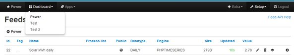
Re: EmonCMS 9.31 | 2016.02.13 released
Hi, is there a way to change dashboard bluish background color? Can't seem to find corresponding file.
Thx
Re: EmonCMS 9.31 | 2016.02.13 released
@ Paul
I can't untick them. They reset itself automatically to published. And I use all of the dashboards daily so no, it's not too many. I even have users with more dashboards. So I think there needs to be a better solution for it.
Re: EmonCMS 9.31 | 2016.02.13 released
I think that you are missing my point. It's not the number of dashboards, it's the fact that by having them all ticked as 'published' they are all promoted as 'quick access' menu items, and the menu bar is not designed to accommodate that many 'quick access' items.
Look at my emoncms.org desktop below. I have 6 dashboards (but could be 10 or more), but because I've only ticked 'published' for the 'Power' dashboard, then I only have one 'quick access' item on the dashboard, but if I want to access the others then I can get access via the sub items under 'Dashboard'.
Not sure what you mean by 'They reset itself automatically', as you can see, my emoncms.org account does not 'reset itself', and displays everything OK.
Paul
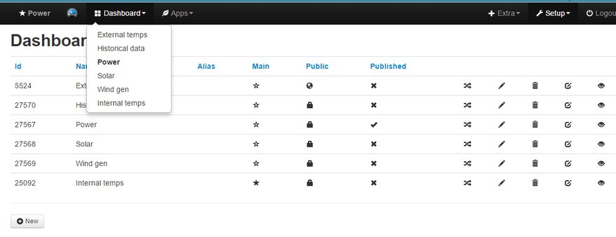
Re: EmonCMS 9.31 | 2016.02.13 released
No I don't think that I miss your point. Your maybe missing mine. There is no point in saying that there are too much dashboards. The applications sets no limit so it should act accordingly. Either you build the application with max values so that you can't add more than 3 "quick access" items (You still then need to check the name length) or you build the application in a way that it is completely capable of handling more "quick access" entries. I'm a Business/System Analyst for more than a decade. I specify and build daily such things for software.
Also this is not a new setup system. In the old 8.4 there was no issue in having them published because the lower bar works as expected. I even changed the DIV settings on the dashboard designer so that the Widget/Save bar is floating added z-index setting so that it will stay where it is and you can scroll down with it always available.
That's why I asked where the code for this stuff is stored. If it will not be fixed centrally I will do it myself....
...and...
... I can't unpublish them. It shows the x but when I reload the page they are back published. Is there maybe a save button hidden now which I can't see because of the black bar? If not then there is maybe a bug...
I'm using a self hosted 9.0rc2 on 16core Windows Server with Apache and Mysql
Re: EmonCMS 9.31 | 2016.02.13 released
is there a way to change dashboard bluish background color?
Hi Ripster,
Click the dashboard edit icon, then click the spanner icon immediately to the left of the eye icon.
That will take you to the Dashboard Configuration window where you can select the background color.
Re: EmonCMS 9.31 | 2016.02.13 released
didn't see that one coming :D
Thx Bill
Re: EmonCMS 9.31 | 2016.02.13 released
firefox7518, if you can contribute a fix for review, please do. The relevant code is at Theme/basic.
Re: EmonCMS 9.31 | 2016.02.13 released
Updated to 9.1, requires administration/update database to change datetime to int in database for DST KWh fix.
Last updated will be wrong until next input/feed update.
Re: EmonCMS 9.31 | 2016.02.13 released
I fixed my issues by commenting out the fixed position in the bootstrap-min.css file and also commenting out the #topspacer {padding-top: 42px;} in emon.css.
this now allows to have more quickaccess entries and as the black bar gets bigger, the rest just moves down.
Of course just a quick fix. Need some time to think of a more nicer solutions or limiting functionality
However this quick fix does not change the bahvior of the responsive design itself so it still does what it should on smaller screens.
Re: EmonCMS 9.31 | 2016.02.13 released
Why would anyone want more than one or two quick access dashboard menu items? Doesn't it defeat the notion of having a structured cascading menu system?
Paul
Re: EmonCMS 9.31 | 2016.02.13 released
is it possible to haven an option to sort the dashboards on Name or ALIAS in the menu ?
i have to manually edit one of the menu php files to enable the usort option and sort on name.
without my change the dashboards are sorted on the id from the database and this is not prefered at least not for me. There was a comment in the menu php file (the one from themes directory if i'm not mistaken) that usort will get enabled once the apps support it but it might be a good idea to also have the id where we sort on confgurable for the dashboard menu (if thats somehow possible)
i can modify it myselve however my changes apply to the "setup" menu as well which gives it a diffrent probably not wanted structure because of the seperators used / structuring in that menu.
Would be good to only apply it for the dashboard menu somehow.
Re: EmonCMS 9.31 | 2016.02.13 released
Why would anyone want more than one or two quick access dashboard menu items?
Probably for the same inane reason they do this:
Re: EmonCMS 9.31 | 2016.02.13 released
I think it's useless to discuss this here. The system does not act as expected. If there is no limitation to add quick access entries then it should still act correct which it doesn't. Overlapping other areas of the site just because the black top bar gets bigger is simply not how it should work. Even if you just add 2 quick entries, the name can still trigger it (like in my case).
I'm very sorry that we with foreign languages sometimes have longer names for something.
I already had this issues with my Italian users with exactly the same issue on 8.4 system and their dashboards.
For me this is daily business as our applications need to be build for German, French, Italian, English. Switzerland has 4 main languages ans users expect that it will run as good on french as it does on english or german.
I really don't know why it is so hard to understand that....
Re: EmonCMS 9.31 | 2016.02.13 released
I really don't know why it is so hard to understand that....
Oh we understand, we really do!
But you've got to realise that emoncms has been written to suit the 'majority' of users, and if you want to have 9 or more quick access menus on your dashboard, or have really long descriptive dashboard names, then maybe it's down to you as a 'Business/System Analyst for more than a decade who specifies and build daily such things for software' to modify your own installation of emoncms to suit your particular circumstances, instead of claiming that the software is buggy, and disparaging the excellent work done by Chaveiro.
Paul
Re: EmonCMS 9.31 | 2016.02.13 released
modify your own installation of emoncms to suit your particular circumstances
Indeed. That's one of the main premises behind Open Source software.
Re: EmonCMS 9.31 | 2016.02.13 released
I fixed it myself and all is good now on my self hosted system.
I was never disparaging the perfect work of Chaveiro and others. If you think so it's your problem.
There will be others with exactly the same issue as I had (there are already others, I think). It's up to the community to address it and to decide if it should be solved.
I moved the Apps and Dashboard links to the right menu and leave the Quick Access on top by using a custom boostrap.css. If someone is interested in this solution he can send me a message and I can gladly provide this unnecessary solution. :-)
I'll stop arguing from an end user point of view.
Sali zämme....
Re: EmonCMS 9.31 | 2016.02.13 released
in case anyone wants to have their dashboard menu sorted alphabetically uncomment this line:
https://github.com/emoncms/emoncms/blob/9.0/Theme/basic/menu_view.php#L29
it's a todo item once apps modules had support for usort and it seems the latest v9 apps branch does have support for this. Maybe that line can now be uncommented ? Since it works here, at least with me
Re: EmonCMS 9.31 | 2016.02.13 released
Maybe that line can now be uncommented ? Since it works here, at least with me..
...and works for me too. Nice find Willems.
Paul
Re: EmonCMS 9.31 | 2016.02.13 released
Done on 9.1 | 2015.10.30.
Re: EmonCMS 9.31 | 2016.02.13 released
When can we update from 9.0rc2 through git repository? :)
Re: EmonCMS 9.31 | 2016.02.13 released
Very shortly. Once it's been approved by Trystan & Glyn.
Paul
Re: EmonCMS 9.31 | 2016.02.13 released
Allright. Thx for the reply!
Re: EmonCMS 9.31 | 2016.02.13 released
I was putting the "-input" process list when i get this error :
No process description available for process '- input' with id '22'.
Add a description to Module\module_name\module_name_processlist.php in process_list() function, $list[] array at the 'desc' key.
Same error for histogram process :
No process description available for process 'Histogram' with id '16'.
Add a description to Module\module_name\module_name_processlist.php in process_list() function, $list[] array at the 'desc' key.
9.1 | 2015.10.30 released new installation , ( the db was installed in 9.0 RC2 and updated via Update&check button in 9.1 administration folder )
thanks in advance,
Fabrizio.
Re: EmonCMS 9.31 | 2016.02.13 released
Fabrizio
I see the same using 9.1 | 2015.10.30
- Although I don't routinely use those processes, so not 100% sure that I've used them in the correct context.
Paul
Re: EmonCMS 9.31 | 2016.02.13 released
....In fact, I'm not convinced that the feed issues have been resolved with this fix.
I updated from 9 RC2 | 2015.09.15 to 9.1 | 2015.10.30 this afternoon, and noticed after the update that a 'Power to kWh' (41) feed dropped about 9kWh after the update - see the graph.
I've also attached the first 10 minutes or so of the log, and it shows feed 41 going downhill from about 15:38:51.
I suppose another question is why this occurred almost 10 minutes after emoncms was started (according to the log)
Paul
Self-hosted Raspberry Pi v2 running Raspbian Wheezy
Re: EmonCMS 9.31 | 2016.02.13 released
@Chaveiro
As an update - you may recall this post, in which another of my power to kWh feeds was unaffected last time this problem occurred (Solar Generation feed 21), and I commented that maybe it was due to the fact that there was no solar power at that time - so no increments/decrements taking place.
Well this time, as the update was during daylight hours and solar generation was taking place, this feed was also now affected - see feed 21 graph attached which dropped about 40kWh at 15:38:51.
The process for feed 21 is;
Paul
Re: EmonCMS 9.31 | 2016.02.13 released
I think this may be related with the update itself, the db format for saving last updated time was changed and the first time after change you posted data to it may got wrong values on the kw/h process.
Can you confirm that the drop occur right after the db update?
Re: EmonCMS 9.31 | 2016.02.13 released
I can't say for sure exactly what time I updated the database, but from the log, emoncms was updated and started at 15:28:33, and the feed problems occurred at 15:38:51, which is 10 minutes later. So possibly as I was doing something else at the same time and didn't update the db straight away.
Now that the database has been updated to 9.1 | 2015.10.30, I can't really step back and repeat the process to test.
I'll rebuild my feeds again and maybe when others update, they make a note of their database update time, and see if the issue is repeated and coincides with that time.
Thanks
Paul
Re: EmonCMS 9.31 | 2016.02.13 released
Is there any chance of including a condition in the 'power to kWh' processor to stop this from occurring?
Something similar to this? (not tested) which could stop the feed from decrementing and prevent us having to keep rebuilding feeds.
Paul
Re: EmonCMS 9.31 | 2016.02.13 released
The problem is with the lasttime value that came wrong.
I think it can be mitigated without losing the possibility to account for negative powers with this bold line:
// kWh calculation
$time_elapsed = ($time_now - $last_time);
if ($time_elapsed < 0) $time_elapsed = 0;
$kwh_inc = ($time_elapsed * $value) / 3600000.0;
Can you test it easy on your setup, Paul?
Re: EmonCMS 9.31 | 2016.02.13 released
I've got a couple of Raspberry Pi's on the testbed which are running v9.0 RC, so I'll give it a try later this evening and let you know.
Paul
Re: EmonCMS 9.31 | 2016.02.13 released
That is much better!
I've run the change through Raspbian Wheezy & Jessie and this is the combined result;
My Timings;
23:15 stop emonhub
23:25 change from 9 RC2 | 2015.09.15 to 9.1 | 2015.10.30
23:26 Enable emoncms log
23:29 Update database
23:31 restart emonhub
I've attached a screenshot showing that the upgrade respected the power to kWh feeds & also the log.
@Chaveiro, that fix appears to have worked OK, thanks.
Paul
Re: EmonCMS 9.31 | 2016.02.13 released
Nice, i will release new version with that fix.
Edit: Done.
Re: EmonCMS 9.31 | 2016.02.13 released
Hi
my myelectric apps page has stopped working just get a blank page i get an error in ie debug
SCRIPT5007: Unable to get property 'currency' of undefined or null reference
eval code (36) (90,9)
Re: EmonCMS 9.31 | 2016.02.13 released
See this post.
Have you updated the 'App's' to v9.0?
Paul
Re: EmonCMS 9.31 | 2016.02.13 released
yep
pi@emonpi ~ $ cd /var/www/emoncms/Modules/app
pi@emonpi /var/www/emoncms/Modules/app $ git checkout 9.0
fatal: Unable to create '/var/www/emoncms/Modules/app/.git/index.lock': Read-only file system
pi@emonpi /var/www/emoncms/Modules/app $ rpi-rw
Filesystem is unlocked - Write access
type ' rpi-ro ' to lock
pi@emonpi /var/www/emoncms/Modules/app $
pi@emonpi /var/www/emoncms/Modules/app $ git checkout 9.0
Already on '9.0'
pi@emonpi /var/www/emoncms/Modules/app $ git pull
Already up-to-date.
but now my apps are displaying as:
Notice: Undefined offset: 0 in /var/www/emoncms/Theme/menu_view.php on line 42
and if i click on it i get:
Notice: Undefined variable: result in /var/www/emoncms/Modules/admin/admin_controller.php on line 82
Re: EmonCMS 9.31 | 2016.02.13 released
As per my post above, please identify your system and give us more detailed info.
I presume it's a emonpi, but you need to provide system detail if you want help...
Paul
Re: EmonCMS 9.31 | 2016.02.13 released
In EmonCMS 9.1 | 2015.11.02 released i have a problem in virtual feed...
I configured a new virtual feed as daily type.. but as source feed i cannot see any feed configured in daily type ( is available in list only the realtyme feed ).
The source feed list are the same for both ( daily or realtime )
Ciao,
Fabrizio.
Re: EmonCMS 9.31 | 2016.02.13 released
HI Everyone
Did the format on how to enter the directories changed on 9.0+?
I didn't had to create feeds since I updated to 9.x but I just wanted to add some feeds and it showed me the "Could not create feed, undefined" error message. I think that has to do with the directories, right?
I used the below way on using the directories:
'phpfiwa'=>array(
'datadir' => 'C:\\emoncmsdata\\phpfiwa\\'
),
'phpfina'=>array(
'datadir' => 'C:\\emoncmsdata\\phpfina\\'
),
'phptimeseries'=>array(
'datadir' => 'C:\\emoncmsdata\\phptimeseries\\'
)
This way it was working for me on old 8.4. Someone got a hint on what to look here?
Thanks
Andi
Re: EmonCMS 9.31 | 2016.02.13 released
The power to kwh feeds problems are still not fixed with me. One feed was really acting up today! i'm using emoncms 9.1 | 2015.11.02 and when looking at visualisation/rawdata (NOT!! realtime visualtion) i see all kinds of weird things like very small drops constantly happening. Unless i'm wrong i think that rawdata should also display an ever increasing graph no matter what zoom level your on. Also i think my data did not save correctly, my graph looks completely different and in my opinion more correct after i used power_to_kwh.php from the proces directory of the usefull scripts repo. As far as i can tell i seem to be having only problems using this particular feed i have in total 5 power to kwh feeds but only once was / is acting up today.
as explained once before my i monitor 4 smart plugs i get 4 watt usuage inputs, one for each plug, i save them to feeds and add them back to calculate the total watt used (of the 4 plugs used together) and then i use a power to kwh to save to a feed and this feed is acting up. I'm running a local emoncms version on a windows 7 on a intel nuc. My data is being read from the plugs by external program and sended to emoncms using the input api (by same program)
here are the screenshots:
this is my setup, feed highlighted in blue is acting up:
when looking at the raw data this evening i saw this: doesn't look particularly suspicious but i knew something was up since my electric showed almost no usuage today at least not a correct number:
next pic is the zoomed in part from 2 and this looks totally wrong:
i knew something was up so i stopped sending data to emoncms and used the power_to_kwh.php script to recalculate this feed based on the total power feed This is the zoomed out graph after recalculation. Looks ok and correct (shows at least 1 kwh more usuage then before (107 range instead of 106)
this pic is the zoomed in part on the same time span as pic 2 looks also more correct
next pic is when i started sending data again, immediatly the rawdata graph shows a drop, the drop can not be fixed no matter what i try editing nodes does not help. and i'm fairly certain if i post some data for some time i'll see the problems from pic 1 and 2 again. I'm guessing something must be still be wrong with kwh feeds or at least this one with me:
so basically the problem is :
- why is there a diffrence between recalculated data, that in my case for this feed today showed more correct data, then the data that got logged today (diffrence between pic 1 & 3)
- the drop after recalculating, using editrealtime to edit the values does not seem to work with this feed, as far as i can tell it did work with my other power to kwh feeds where i had the same problem but i haven't looked at them in detail yet
Is perhaps something wrong with my input proces list ? or is there still a bug somewhere with the power to kwh feeds?
and just to be sure i can only see this if i zoom in enough and use rawdata to view the feed, realtime seems to be showing correclty however data is not correct it logged less that acutally was used
Re: EmonCMS 9.31 | 2016.02.13 released
...Unless i'm wrong i think that rawdata should also display an ever increasing graph no matter what zoom level your on....
The 'power to kWh' works both ways, ie it will increment when receiving positive values, but decrement when receiving negative values. An example is using the process on the main power feed when a solar PV system is fitted, whist importing power, the 'power to kWh' feed will increment, but when exporting power (from PV) the graph will decrement.
The fluctuations are minute, and could possibly be noise in the system, and depending upon where the noise is being picked up from, you could try adding a 'Allow Positive' process just before your 'Power to kWh' process.
If you want to be sure - download and look at your emoncms.log file and look what values are being written to the feed at the relevant times and compare.
You may find it advantageous to increase the feed update period on your 'power to kwh' feed, as it looks as though it's currently 10 seconds? The feed usage may be more suited to updating it every 2 or 3 minutes, which will smooth out any noise, decrease data storage space and increase ui speed (as there will be less datapoints to calculate/redraw). You can do this via the 'usefulscripts' process script which you are currently using.
As for your screenshot 5 - power dropping after restarting emonhub; I think that we have already discussed this in this thread and a possible workaround, but I'm not sure whether it's a bug with emoncms or a bug in the 'usefulscripts' process script (I'm favoring the script!)
Paul
Re: EmonCMS 9.31 | 2016.02.13 released
hey paul, i tried editing the values using editrealtime but it did not work. However i finally figured out what's causing the drop immediatly after sending data again. As far as i'm concerned it's a bug in usefullscripts process script. When you look at the feeds table using phpmyadmin each feed record has a value column and it's this value, which is never updated by the usefullscripts script that's causing the drop. After recalulating this value for the target feed should be (also) be set to the last calculated value and it's fixed.
i just tried recalculating data, look up last known good value, write it in target feed's value in phpmyadmin and start sending again. So i think this value needs to be updated by the usefullscripts script as well at the moment it does not do this
edit : the fluctuations in the zoomed pic are indeed minute but in the not zoomed pic there's a huge diffrence between the graphs for a time span of 3:30 hours, i have one 1 kwh extra after recalculating since i only have like 5-6 kwh usuage a day (from all 4 plugs total) 1 kwh off is rather huge for me.
but i turned on logging again and will check later on again at what values gets written.
Also i'm not using radio i'm using wifi to read from the smart plugs and i'm not certain if wifi can have noise ? but i'll still ad the "must be positive" in the process list to be sure
Re: EmonCMS 9.31 | 2016.02.13 released
As this thread is about emoncms v9 it might be a good idea to highlight the script issue in it's own thread, and hopefully then, Trystan (the author of the script) may see it and we can get this annoying issue sorted once and for all.
Paul
PS That was a good idea checking the db with phpmyadmin :)
Re: EmonCMS 9.31 | 2016.02.13 released
i'm not certain if it's v9.1 specific, but i have figured out the problem with the kwh graphs as shown in the pictures: to find the problem i added extra logging in process_processlist.php where the power_to_kwh feed gets calculated:
here's an excerpt of my extra logging + default logging:
1st calculation
2015-11-04 22:44:49.915|INFO|process_processlist.php|power_to_kwh(): feedid=30 last_time=1446677084 inputValue=223.63 last_kwh=108.606 kwhinc=0.00031059722222222 new_kwh=108.60631059722
2015-11-04 22:44:49.915|INFO|feed_model.php|insert_data() feedid=30 updatetime=1446677089 feedtime=1446677089 value=108.60631059722 arg=join
2015-11-04 22:44:49.915|INFO|PHPFina.php|post() id=30 timestamp=1446677089 value=108.60631059722 padding=join
2nd calculation at a later point immedialtly following the previous data insert:
2015-11-04 22:44:54.937|INFO|process_processlist.php|power_to_kwh(): feedid=30 last_time=1446677089 inputValue=223.35 last_kwh=108.606 kwhinc=0.00031020833333333 new_kwh=108.60631020833
2015-11-04 22:44:54.937|INFO|feed_model.php|insert_data() feedid=30 updatetime=1446677094 feedtime=1446677094 value=108.60631020833 arg=join
2015-11-04 22:44:54.938|INFO|PHPFina.php|post() id=30 timestamp=1446677094 value=108.60631020833 padding=join
look at last_kwh, value, and the calculated kwh_inc which comes from :
as you can see in 2 data inserts after each other the value is going down and it's due to preciesion problems of last_kwh. The kwhinc value falls outside the the precision from $last_kwh that's why i can have very small dips in data, however this also means the kwh feed is losing (small amounts) of data due to precision problems which can add up over time. like for me today i had lost about 1 kwh due to this during the whole day. this seems not much but my plug monitoring shows only 4-6 kwh a day so losing about 1kwh on a whole day does add up. I now also believe that the new_kwh value only increases if the calculated increment was higher or equals then 0.0005 as you can see last_kwh was 108.606 and my increment gets only appended after it's preciesion 108.606 + 0.00031059722222222 equals 108.606_31059722222222 it gets written to mysql and next time the value is requested again however it's 108.606 again because of the precision problem this keeps repeating until my increment is higher then 0.0005 only then last_kwh becomes 108.607 due to rounding. so i think but i'm not certain this is why i saw the long flat lines in pic 1 from previous post (from 15:00 till around 18:30)
after some more investigation i found out the problem for me lies in the feeds table the value column is specified without or with a not precise enough precision (if this data is coming from sql which it is when redis is not enabled as far as i could see in the sources ( power_to_kwh requests the value using the get_timevalue function and this function first checks if redis is availible and if so takes the value from there if redis is not availible it takes the value from mysql)
i used this sql statement to alter the precision:
ALTER TABLE `feeds` CHANGE `value` `value` FLOAT(16,12) NULL DEFAULT NULL;edit: above sql statement should be:
ALTER TABLE `feeds` CHANGE `value` `value` FLOAT(26,12) NULL DEFAULT NULL;
FLOAT(M,D) M = total digitis D = decimal digits in my previous sql statement I limited the feed values to max 16-12=4 digits so 9999 which is not enough. Now it's 26-12=14 digits so 99999999999999
and at the moment the problems seem to be fixed if i look at the logging and graph but i'll have to check tommorow morning to be sure when i gathered some more data.
Edit - just checked the log and raw graph data this morning. Everything is behaving normally now, so i guess adding more precision for last value solved it. Before, it was using 3 digits after the decimal point. In my case, if it was using 4 or 5 digits that would have solved it as well, but I wanted it to be more precise so I went for 12 digits after the decimal point, since it also tries to write a value with this kind of precision back to the feeds table in MySQL.
edit2: it might also be better to switch to decimal instead of float or double because of possible comparison problems. However i do not think emoncms is affected by those problems at the moment since withouth redis its looking at mysql value to do some calculations and there are no comparisons made as far as i could tell from what i looked at already in sources (for this problem only). Here's a link that describes the problem.
i siwtched to decimal(26,12) instead of float(26,12) in my local version also i used 26 as total digits since my values probably never bump that limit during my lifetime :) but it might with others so increasing it even more might be a good idea if this winds up in the version some time in the future (using increased precision on floats or decimals to prevent future comparission problems)
Re: EmonCMS 9.31 | 2016.02.13 released
Hi.
I've read here that there are problems with the Power to kWh processor.
I'm having a problem with this processor at least in one feed, and I think no one mentioned it.
The first image show the normal processing made my emoncms (on an external server) of the total W feed and the second shows the processing made by usefulscripts power_to_kwh.php
This may be some bug, I think.
Re: EmonCMS 9.31 | 2016.02.13 released
Which one is correct?
The values are rather small, may be rounding issues somewhere.
Re: EmonCMS 9.31 | 2016.02.13 released
Hi.
Quote:
Edit:
Ops, I understood you question.... Yaaaa the second is correct.
I noticed the original was wrong and tried the script to see what happens...
Edit 2:
If you want the feeds (files or export, I can give put the files somewhere for you to download).
Cheerio.
Re: EmonCMS 9.31 | 2016.02.13 released
Try applying that change that joyrider gave, to increase resolution of last values and see if it happens again with such low powers on the future:
ALTER TABLE `feeds` CHANGE `value` `value` DECIMAL(26,12) NULL DEFAULT NULL;
You are not using REDIS right?
Re: EmonCMS 9.31 | 2016.02.13 released
Hi.
It was as float, doesn't the float has more precision?
Normally this happens at night when the consumption is around 200W, during the day it goes up. The strange thing is that I have other feeds with low powers like this, including the solar that can't go above 500 or (.5Kwh) and it is not happening with those ones. But in my prior tests, before having the panels installed, I've seen it happen with my testing feeds.
And I was looking at the graphs now and noticed that there are also a differences with the opposite direction: the bars at 23:00 and 00:00 are lower... There must be some error in the calculation. At this point what is more trustworthy, the manual script to remake the Kwh or the regular realtime processor?
About the REDIS, I believe not, I've seen the term here and there, but I don't really know what it is and didn't mind to search yet.
Cheers.
Re: EmonCMS 9.31 | 2016.02.13 released
it was indeed set as float but without precision specified which makes it by default use 3 digits after the the decimal point. At least that was the case with me the float(26,12) makes it use 12 digit's after the decimal point the nr 26 points to the total digitis used so 26,12 should give a maximum value of 99999999999999.999999999999. whereas float without precision specified only used .999 The problem with me was that i had low values for the increment value it was in the range of 0.000XXXXXX so adding those 2 values might give problems. For example if you last value was for example 108.606 and your increment value is 0.000125 it will add these up to 108.606125 and write it to mysql however mysql rounds this value to 108.606 again so the next time it calculates it uses 108.606 again and you lost your previous added value of 0.000125 if the increment stays below 0.0005 the 108.606 value stays the same. That was the problem with me and specifying float(26,12) or decimal(26,12) fixed it with me. I did not have the problem anymore after applying that change. I only switched to decimal because of possible problems with compairing values but i'm not certain emoncms had this problem (at the moment). so float (26,12) or any other precision higher then what just float uses fixed it with me.
Just try it out, if you current last values are higher or near 99999999999999.999999999999 you should increase the nr 26. if you specify a range that's lower then you current feed values they all get reset to the max value i had that problem at first when i had choosen 16,12 which is too low.
also i'm fairly certain if i would recalculate again my kwh graph would look the same
edit:
if you want extra logging to see if this is indeed the problem without first applying the above change. Add this line to the power_to_kwh function in Modules\process\process_processlist.php. Add it before the else statement near this line:
$new_kwh = $last_kwh + $kwh_inc;
} else {
so that it becomes
$new_kwh = $last_kwh + $kwh_inc;
if($feedid==30) {
$this->log->info("power_to_kwh(): feedid=$feedid last_time=$last_time inputValue=$value last_kwh=$last_kwh kwhinc=$kwh_inc new_kwh=$new_kwh");
}
} else {
and change the nr 30 to the feed id of your kwh feed your having problems with.
it will then log the values like increment starting value etc and you can check if it is the same problem by comparing 2 or more caculations after each other if you see that the starting value (last_kwh) gets reset to the previous value in the next calculation during the period your having problems (or when kwh_inc is in the range of 0.000XXXX) it's the same problem as i had
Re: EmonCMS 9.31 | 2016.02.13 released
Hi.
Thank you for the explanation.
I've made the change and normally I notice this issue at night. Tomorrow I will update the status to se if it happens again.
Cheers
Re: EmonCMS 9.31 | 2016.02.13 released
Hi.
Update:
With the change of the variable type and size one the mysql database the problem seems to have been fixed.
Cheers...
Re: EmonCMS 9.31 | 2016.02.13 released
I'm about to redo some of emontx boards etc and going to reload my pi+harddrive
one Q: is Mysql as feedengine still only on the extended version or was this added in the 9.x series?
and i see that https://github.com/emoncms/emoncms/blob/9.0/docs/LinuxInstall.md still says v8, on the 8.x series i found that 2 files where not where the guide said they should be...
no mention where it should be emoncms.log
and this one was not where it should be /etc/php5/conf.d/suhosin.ini
Re: EmonCMS 9.31 | 2016.02.13 released
Hi is there any news on an updated image for the emonpi that includes v9 of emoncms or is there a installation guide for updating from 8.5v to 9v
Thanks Steve
Re: EmonCMS 9.31 | 2016.02.13 released
bumping this up as its pretty simple to answer and i planned to reload the pi today... just need to backup my sql database so i get the data with me
what will i miss if i switch from v8.5.1 XT to v9.1?
Re: EmonCMS 9.31 | 2016.02.13 released
Bo, v9 does support MYSQL, just make sure it's activated in v9 settings.php
I see you made reference to the Linux install docs, don't forget that there are specific Raspberry Pi installation guides to follow, for Wheezy and a beta guide for Jessie.
Paul
Re: EmonCMS 9.31 | 2016.02.13 released
Thanks....
Those guides i have never found... And Jessie? is that a follower to Wheezy ?
EDIT: remember that i do an install from scratch... ie no ready image... i once made a google doc with all the commands etc so i have a step by step thing that i know works...
EDIT: https://github.com/emoncms/emoncms/blob/9.0/docs/RaspberryPi/install_Raspbian_Jessie.md
assume its this one
Re: EmonCMS 9.31 | 2016.02.13 released
Yes, that's it.
Paul
Re: EmonCMS 9.31 | 2016.02.13 released
thanks for that.... starting to shutdown and reformat SD
Would I miss anything going from v8.5.1 XT to v9.1?
Re: EmonCMS 9.31 | 2016.02.13 released
Hi all,
After upgrading from 8.5 to 9.1 my kwh feed reads 0. Viewing the graph shows the correct climb to 800 or so then like a cliff down to 0.
Any ideas how to set this straight?
Thanks
Kev
Re: EmonCMS 9.31 | 2016.02.13 released
Yes, if it's a power to kwh process feed, use this script to recalculate the data.
https://github.com/emoncms/usefulscripts/tree/master/process
Run the power_to_kwh.php script and answer the prompts, and it will rebuild your kwh feed, based upon the source feed.
Paul
Re: EmonCMS 9.31 | 2016.02.13 released
Hi Paul,
Source feed is a PHPFIWA in watts. After running said script which takes 7 seconds I have a new feed with no data and showing 0.
I cloned that repository to /tmp and am running it as root.
Thanks for the quick reply,
Kev
Re: EmonCMS 9.31 | 2016.02.13 released
Kev, The script is compatible with PHPFIWA source feeds, and it shouldn't really matter where it's run from, although I cloned mine to root. Is your kwh feed PHPFINA?
I ran the script about a week ago, and it corrected mine ok.
Paul
Re: EmonCMS 9.31 | 2016.02.13 released
Yeah it's PHPFINA and I allowed it to create a new feed. I had cloned the latest 9.x from github. Does the attached zip have later fixes?
Re: EmonCMS 9.31 | 2016.02.13 released
The original existing kwh feed is of little use at the moment, can you run the script to overwrite it.
I have not used it to create a new feed, but I suspect that you would have to create a new feed in emoncms first, to create the meta file & MYSQL reference, and then run the script to that new feed..
Paul
Re: EmonCMS 9.31 | 2016.02.13 released
Thanks Paul. Whatever I try it seems to create/overwrite with a blank feed 24B in size. Permissions seem fine. Not sure what could be wrong or where to check next. I've rolled back to 8.5 for now.